复习碎碎念
约 18600 个字 71 行代码 52 张图片 预计阅读时间 125 分钟
丢一些自己在复习的时候觉得可能有用的东西
一些可能需要的东西
一些中英文对应关系(计网介绍)
网络边缘 Access Layer 或者 Network Edge，但是书上没有找到
网络核心 Network Core，书上好像说Core Network多一点，也可以叫Core Layer
端系统 End System
分组交换(包交换) Packet switching
存储转发 store and forward
网络协议 network protocol
封装 Encapsulation
解封装 De-encapsulation
协议数据单元 PDU Protocol Data Unit
吞吐量 throughput
有效吞吐量 goodput
病毒 virus
蠕虫 Wrom
拒绝服务攻击 DoS Denial-of-Service Attack
僵尸网络 botnet
数据包嗅探 packet sniffing
IP欺骗 IP spoofing
一些中英文对应关系(物理层)
频谱 spectrum
模拟信号 analog signal
数字信号 digital signal
单工 simplex
半双工 half-duplex
全双工 full-duplex
串行传输 Serial transmission
并行传输 Parallel transmission
基带传输 baseband transmission
频带传输 band transmission
调制 modulation
解调 demodulation
调制解调器 MODEN modulation-demodulation
二极管 diode
多径传播 multipath propagation
多径时散 multipath time dispersion
散射传播 scattering propagation
一些中英文对应关系(数据链路层)
无确认无连接服务 Unacknowledged connectionless service
有确认无连接服务 Acknowledged connectionless service
有确认有连接服务 Acknowledged connection-oriented service
帧定界符 Frame Delimiter
前导码 preamble
乱序 out of order
重复 repeatedly delivery
自动重传请求 ARQ Automatic Repeat Request
带有重传的肯定确认 PAR Positive Acknowledgement with Retransmission
一些中英文对应关系(MAC层)
拓扑 topology
混杂模式 promiscuous mode
冲突域 Collision Domain
广播域 Broadcasting Domain
干扰 Interference
一些中英文对应关系(网络层)
聚合 aggregation
一些UDP/TCP协议的使用以及工作的端口
DHCP 使用UDP 服务器端口67 客户端端口68
RIP 使用UDP 使用端口520
BGP 使用TCP 使用端口179
QUIC 使用UDP 建议使用端口443
一些东西的长度
MAC地址 48bit
IP地址 32bit
IPv6地址 128bit
IP数据报最短长度 20byte
IPv6头部长度 固定为40byte
IP报首部长度、总长度、片偏移的基本单位分别是4B、1B、8B
端口号长度 16bit
UDP首部长度 8byte
TCP首部最短长度 20byte
TCP首部长度以4字节为单位
Introduction
网络分类
个域网 PAN Personal Area Network
局域网 LAN Local Area Nwtwork
城域网 MAN Metropolitan Area Network
广域网 WAN Wide Area Network
Internet与internet
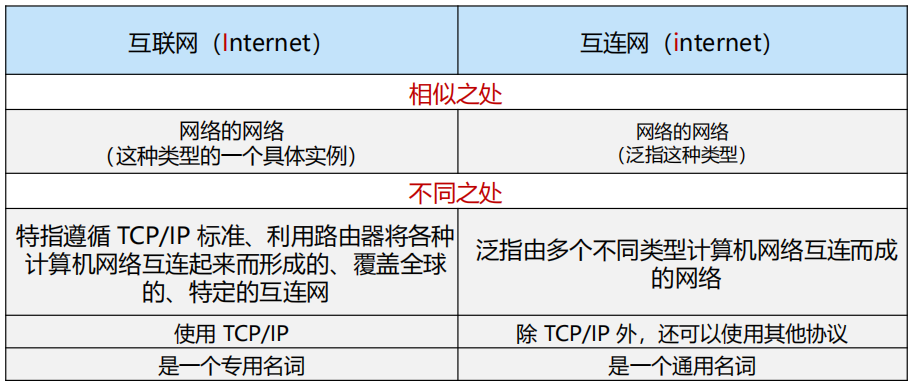
接入网
光纤到户 FTTH
有源光纤网络 AON Active Optical Network
无源光纤网络 PON Passive Optical Network
数字用户线 DSL Digital Subscriber Line
同轴电缆 Cable
混合光纤同轴电缆 HFC
无线局域网 WLAN
物理介质
注意
存储常用字节Byte，K/M/G层级为2^10进制
传输常用比特Bit，K/M/G层级为10^3进制
光纤 Optical fiber：10-100 Gbps以上
双绞线 Twisted Pair：第5类(100 Mbps ~ 1 Gbps)、第6类(10 Gbps)
同轴电缆 Cable：100 Mbps
无线局域网 WIFI：10-100 Mbps，10 m
地面微波 Terrestrial microwave：45 Mbps
网络核心
网络核心的两大功能：路由和转发
电路交换 circuit switching：采用面向连接的方式，需要资源预留(链路带宽资源和交换机的交换能力)
- 电路交换的多路复用：无法应对互联网上的突发流量(Burst)
- 频分多路复用FDM(Frequency Division Multiplexing)
- 时分多路复用TDM(Time Division Multiplexing)
报文交换
存储转发 store and forward
报文交换 message switching
分组交换 packet switching：采用存储转发机制，以分组作为数据传输单元，每个分组的首部都含有地址(目的地址和源地址)等控制信息
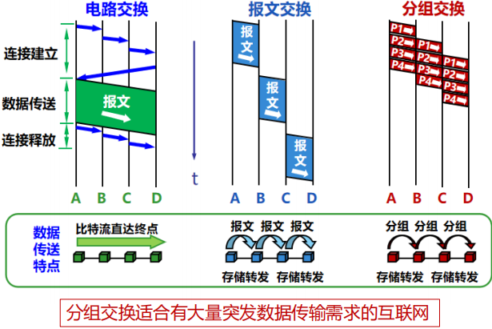
协议分层结构
层次栈 a stack of layers
对等实体 peers
接口 interface
网络体系结构 network architecture
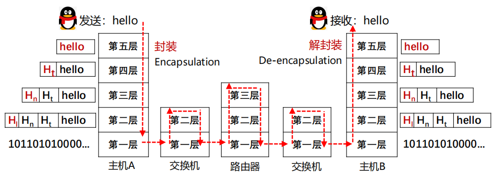
服务原语
服务原语 Service Primitives
两种典型服务：面向连接的和无连接的
核心服务原语：(1)连接请求 (2)接收响应 (3)请求数据 (4)应答 (5)请求断开 (6)断开连接
协议是不同节点的同一级实体间使用的
模型
- OSI模型(Open Systems Interconnection)
- 物理层 Physical Layer：传输的是比特流(bit stream)
- 数据链路层 Data Link Layer：传输的是帧(frame)
- 网络层 Network Layer：设备到设备
- 传输层 Transport Layer：进程到进程
- 会话层 Session Layer
- 表示层 Presentation Layer
- 应用层 Application Layer
- TCP/IP参考模型
- 网络接口层 host-to-network Layer
- 互联网层 internet Layer
- 传输层 transport Layer
- 应用层 application Layer
TCP/IP模型
端到端原则：由端系统负责丢失恢复等，简单的网络大大提升了可拓展性
IP分组交换的特点：
- 可在各种底层物理网络上运行(IP over everything)
- 可支持各类上层应用(Everything over IP)
- 每个IP分组携带各自的目的地址，网络核心功能简单(通过路由表转发分组)，适应爆炸性增长
无连接和面向连接
- OSI模型网络层能够支持无连接和面向连接通信
- TCP/IP模型的网络层仅支持无连接通信(IP)
计算机网络度量单位
比特率 bit rate：单位bps, kbos, Mbps, Gbps
带宽 bandwidth：单位bps等
包转发率 PPS Packet Per Second：线速转发(交换机端口在满负载的情况下，对帧进行转发时能够达到该端口线路的最高速度)[在交换机上发送小包更容易实现线速]
时延 Delay
- 传输时延(transmission delay)：数据从节点进入传输媒体所需要的时间，又叫发送时延
- 传播时延(propagation delay)：电磁波在信道中传播一定距离需要的时间
- 处理时延(processing delay)：主机或路由器处理分组(分析首部、提取数据、差错校验、查找路由)所花费的时间
- 排队时延(queueing delay)：分组在路由器输入输出队列中排队等待处理的时间
- 往返时延(RTT Round-Trip Time)：从发送方发出数据，到发送方接收接收方的确认经历的时间
时延带宽积 bandwidth-delay product = 传播时延 × 带宽 (按比特技术)
吞吐量 throughput：单位是 b/s
有效吞吐量 goodput：单位时间内目的地正确接收到有用信息的数目(以bit为单位)
时延抖动 Jitter：变化的时延称为抖动
互联网诞生的标志
1969年ARPANET产生
Physical Layer
物理层基本概念
物理层数据以比特流(bit stream)作为基本单位进行传输
物理层机械特性(Physical characteristics)：接口的物理机构，接线器的形状和尺寸、引线数目和排列、固定和锁定装置等
物理层电气特性(Electrical characteristics)：电路特性、负载要求、传输速率和连接距离、发送信号电平、发送器和接收器的输出阻抗、平衡特性等
物理层功能特性(Functional characteristics)：接口执行的功能、接线器的每一引脚的作用
物理层过程特性(Process characteristics)：指明对于不同功能的各种可能事件的出现顺序

有限带宽信号
信号的信息承载能力与带宽有直接关系，带宽越宽，信息承载能力越强
对于比特率为B bps的信道，发送8位所需的时间为8/B秒，若8位为一个周期T，则一次谐波的频率是：\(f_1=B/8~Hz\)
能通过信道的最高次谐波数目为：\(N=f_c/f_1\)，其中\(f_c\)为截止频率，主要由信道的物理特性决定
结论：及时对于完善的信道，有限的带宽限制了数据的传输速率
The Nyquist theorem 奈奎斯特定理
无噪声有限带宽信道的最大数据传输率公式
最大数据传输率 = \(2Hlog_2V\) bps，其中H表示带宽
data rate = symbol rate * bits per symbol
The Shannon theorem 香农定理
信噪比(信号功率S和噪声功率N之比) = \(10log_{10}S/N\)，单位：分贝
带宽为H赫兹，信噪比为S/N的任意信道的最大数据传输率为：\(Hlog_2(1+S/N)\) bps
信道的最大数据传输速率
一条信息所载荷的信息量等于它所表示的事件发生的概率\(p\)的倒数的对数
当a为2时，I的单位为比特；当a=自然数e时，I的单位为奈特
数据通信系统模型
消息是信息的载体，消息中可能含有信息。信号是消息的载体
数据编码技术
归零编码 RZ：高电平变0表示1，低电平变0表示0
不归零编码 NRZ：高电平表示1，低电平表示0
曼彻斯特码 Manchester：从低到高表示0，从高到低表示1
差分曼彻斯特码 Differential Manchester：每次开始有跳表示0，没有跳表示1
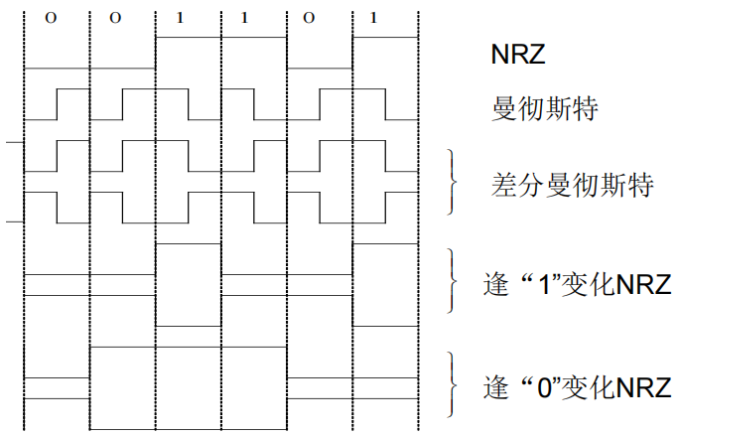
频带传输
幅移键控法(调幅) Amplitude-shift keying(ASK)
频移键控法(调频) Frequency-shift keying(FSK)
相位键控法(调相) Phase-shift keying(PSK)
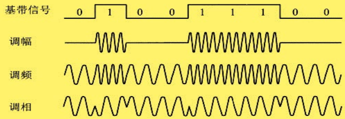
BPSK和QPSK(4QAM)采用调相实现，16QAM采用调幅加调相实现
导引型传输介质
双绞线 Twisted Pair：通信距离一般在几到几十公里(5类带宽100Mhz，6类250Mhz)
同轴电缆 Cable：基带同轴电缆(10Mbps, 1km)、宽带同轴电缆(300-400MHz, 100km)
光纤 Optical fiber：
- 多模突变光纤(multimode mutation fiber)[带宽较窄，使用于小容量短距离通信]
- 多模渐变光纤(multimode graded fiber)[带宽较宽，使用于中容量中距离通信]
- 单模光纤(single-mode fiber)[带宽极宽，使用于大容量远距离通信]
非导引型传输介质
短波传输short-wave transmission(无线电波 radio wave)：沿地表传输数百千米，靠大气层中的电离层反射传播数千上万千米
微波 microwave：多路复用、射频工作和中继接力是地面微波传输的三个最基本的工作特点。两通信站之间的距离一般在40~60km。
大气激光通信 atomspheric laser communication 可传输语音、数据、图像等信息
多路复用
TDM信号(时分复用信号)也成为等时(isochronous)信号
统计时分复用(STDM, statistical time division multiplexing)指动态地按需分配共用信道地时隙
波分复用(WDM, Wavelength Division Multiplexing)是利用多个激光器在单条光纤上同时发送多束不同波长激光的技术
码分复用(CDMA, Code Division Mulyiple Access)是指利用码序列相关性实现的多址通信
- 码片序列 Chip sequence
- 码片 Chip
码分复用使用举例
- 共有四个站进行码分多址CDMA通信。四个站的码片分别为
- A: (-1 -1 -1 +1 +1 -1 +1 +1)
- B: (-1 -1 +1 -1 +1 +1 +1 -1)
- C: (-1 +1 -1 +1 +1 +1 -1 -1)
- D: (-1 +1 -1 -1 -1 -1 +1 -1)
- 问题
- 现收到这样的码片序列：M=(-1 +1 -3 +1 -1 -3 +1 +1)
- 问哪个站发送数据了？
- 发送数据的站发送的1还是0？
- 求解
- A*M=1/8*(1-1+3+1-1+3+1+1)=1因此A发送了1
- 同理，B*M=-1，C*M=0，D*M=1
- 即A、D发送了1，B发送了0，C未发数据
码片序列实现了扩频：直接序列扩频DSSS(Direct Sequence Spread Spectrum)和跳频扩频FHSS(Fequency Hopping Spread Spectrum)
正交频分复用(OFDM, Orthohonal Frequency Division Multiplexing)：将信道分成若干正交子信道，将高速数据信号转化成并行的低速子数据流，调制到在每个子信道上进行传输 - 4G、5G、WIFI 5都采用了OFDM技术
Data Link Layer
数据链路层分为逻辑链路控制(LLC)和介质访问控制(MAC)，其中LLC是局域网的数据链路层
数据链路层的数据以帧(frame)为单位进行传输：将比特流划分成帧的主要目的是为了检测和纠正物理层在比特传输中可能出现的错误
数据链路层提供的服务包括差错控制(Error Control)和流量控制(Flow Control)
数据链路层提供的服务
- 无确认无连接服务：适用于误码率低的可靠信道或者需要实时通信的场景(以太网)
- 有确认无连接的服务：适用于不可靠的信道[无线信道](802.11，也就是WiFi)
- 有确认有连接的服务：适用于长延迟的不可靠信道
分组(packet)和成帧(frame)的关系
packet是网络层传输的基本单元，frame是数据链路层传输的基本单元，网络层的packet是数据链路层frame的有效载荷部分，除了有效载荷，还要在头部添加头标，尾部添加尾标
帧定界符(frame delimiter)
- 字节计数法(Byte count)
每一个帧的开始的一个字节是一个数字，表示这一个帧中包含有多少个字符(包含自己)。这种情况下，一旦有一个计数字节发生了错误，那么就会破坏帧的边界，导致一连串帧的错误。
- 带字节填充的定界符法(Flag bytes with byte stuffing)
定界符(FLAG)是特殊的字节，比如0x7E，用于区分前后两个不同的帧。
FLAG + 头标 + 有效载荷 + 尾标 + FLAG：从头标到尾标表示一个帧
添加了转义字节，避免了在有效载荷部分出现于定界符相同的字节的问题
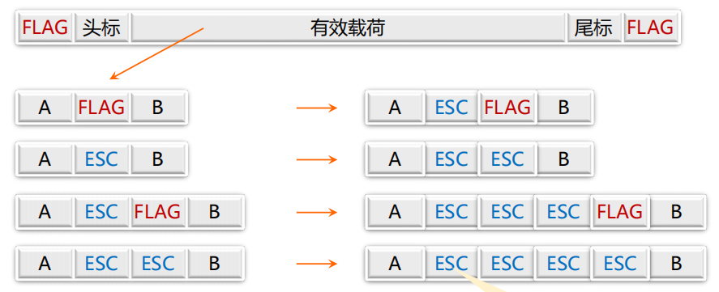
如果有效载荷中出现了定界符或者是转义字节，那么就在这个字节的前面加上一个转义字节。接收方收到ESC，则后一个字节无条件称为有效载荷，不进行检查。接收方收到FLAG，认为是帧的边界。
- 带比特填充的定界符法(Flag bits with bit stuffing)
定界符：两个0比特之间，连续6个1比特
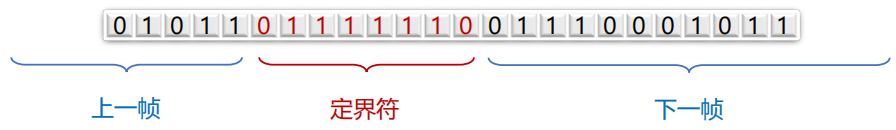
若在有效载荷中出现连续5个1比特，则直接插入1个0比特
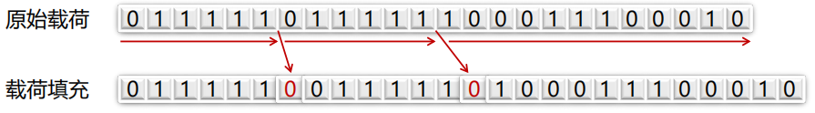
接受方收到数据后，如果出现连续的5个1比特，下一个比特为0，则认为是有效载荷并且丢弃0比特；下一个比特为1，认为是定界符，一帧结束。
- 物理层编码违例(Physical layer coding violations)
核心思想：选择的定界符不会在数据部分出现，也就是说，选择数据部分的非法字符作为定界符。
差错控制
信道噪声导致数据传输问题：差错(incorrect)、丢失(lost)、乱序(out of order)、重复(repeatedly delivery)
解决方案：差错检测与纠正、确认重传(包括接收方校验数据、使用定时器以及顺序号)
流量控制
在链路层需要考虑接收方的处理速率(接收方缓冲区的大小是有限的)
解决方案：基于反馈(feedback-base)的流量控制和基于速率(rate-based)的流量控制
检错码(error-detecting code)
主要用在高可靠、误码率较低的信道上，比如光纤链路
纠错码(error-correcting code)
主要用于发生错误比较频繁的信道上，比如无线链路
使用纠错码的技术通常称为前向纠错(FEC, Forward Error Correction)
码字与码率
码字(code word)：一个包含m个数据位和r个校验位的n位单元，描述为(n, m)码，n=m+r
码率(code rate)：码字中不含冗余部分所占的比例，可以用m/n表示
海明距离(Hamming distance)
两个码字的海明距离：两个码字之间不同对应比特的数目
一种编码方案的海明距离：改编码方案中任意两个合法码字的最小海明距离
为了发现 d 比特的错误，需要最小的海明距离为 d+1
为了纠正 d 比特的错误，需要最小的海明距离为 2d+1
典型检错码
- 奇偶校验码(Parity Check)
增加一位校验位(保证1的个数为奇数/偶数个)，可以检查奇数位错误，但是不能纠正
- 校验和(Checksum)：主要用于TCP/IP体系中的网络层和传输层
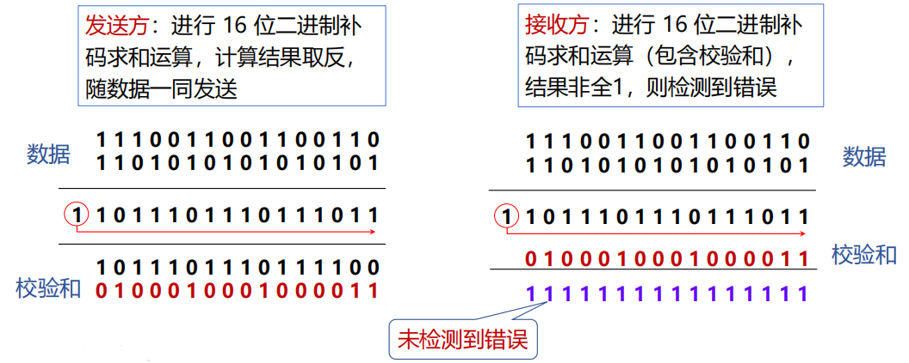
溢出的1需要重新加到最后一位上
记得计算完成之后要取反
- 循环冗余校验(Cyclic Redundancy Check, CRC)：数据链路层广泛使用的校验方法
设原始数据D为k位二进制模式，如果要产生n位CRC校验码，需要事先选定一个n+1位二进制位模式G(最高位为1)。
然后将原始数据D乘以\(2^n\)(也就是在D后面添加n个0)，产生k+n位二进制模式，用G对该位模式做模2除(异或运算)，得到余数R(不足n位前面用0补齐)即为CRC校验码
最后需要将生成的校验码添加到原数据的尾部
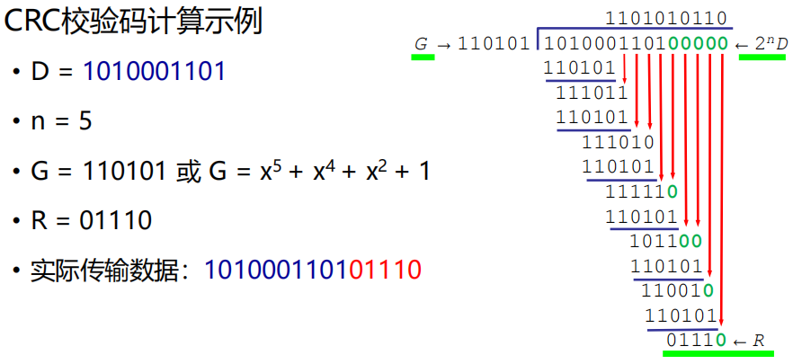
四个国际标准生成多项式(这个考试总不能不给吧×)
- CRC-12 = \(x^{12}+x^{11}+x^3+x^2+x+1\)
- CRC-16 = \(x^{16}+x^{15}+x^2+1\)
- CRC-CCITT = \(x^{16}+x^{12}+x^5+1\)
- CRC-32 = \(x^{32}+x^{26}+x^{23}+x^{22}+x^{16}+x^{12}+x^{11}+x^{10}+x^8+x^7+x^5+x^4+x^2+x+1\)
以太网、无线局域网使用CRC-32生成多项式
CRC可以检测出所有单比特的错误
CRC中带r个检验位的多项式编码可以检测到多有长度小于或等于r的突发性错误
纠错码设计
要求：m个信息位，r个校验位，纠正单比特错，需要满足条件
典型纠错码 - 海明码 Hamming Code
以奇偶校验码为基础(默认为偶校验码)
检验位：2的幂次方位(记作p1, p2, p4, p8)

错误的定位，只需要把错误错误的校验位的下标相加，就是发生错误的下标编号(比如如果p1，p2，p4发生错误，那么就表示第7位出错)，这里的位数是加上校验位的情况。
具体实现过程：每个码字到来之前，接收方计数器清零，然后接收方对每个校验位进行检查，如果校验位Pk出错，计数器加k，最后如果计数器为0，表示没有错误，否则就是计数器结果位出错。
使用海明码纠正突发错误
采用k个码字(n=m+r)组成k×n矩阵，按列发送，接收方恢复成k×n矩阵
kr个校验位，km个数据位，可以纠正最多k个突发性连续比特错
典型纠错码 Convolutional Code
计算方式：从起点开始时考虑所有的情况，并且累加每条路径上每次输出结果的海明长度的值，当后续有不同路径通往同一个节点时，保留累计海明距离更小的那一条路径。
停等协议(stop-and-wait)
发送方发送一帧后暂停，等待确认(Acknowledgement)到达后发送下一帧。接收方完成接收后，回复确认接收。
发送方添加计时器(timer)，用来计时发送的帧是否已经超时而需要进行重传。
序号(SEQ：sequence number)用来判断接收方收到的帧是第一次发来的新帧还是需要被丢弃的重复帧(ack包丢失导致发送发重传的重复帧)，在停等协议中，序号只需要1个bit即可。
效率的评估
F = frame size (bits)
R = channel capacity (Bandwidth in bits/second)
I = propagation delay + processor service time (second)
每帧发送事件(Time ti transmit a signal frame) = F/R
总延迟(Total Delay) = D = 2I
停等协议的发送工作事件是F/R，空闲时间是D
当F<R*D时：信道利用率(line utilization)=F/(F+R*D) < 50%
停等协议的问题：只能有一个没有被确认的帧在发送中
长肥网络(LFN, Long Fat Network)：如果一个网络的带宽-延迟乘积(bandwidth-delay product)很明显的大于 \(10^5\) bits(~12kB)，则可以被认为时长肥网络
停等协议的信道利用率很低：传播时延较长。可以通过使用更大的帧来提高效率，但是使用更大的帧会提高在传输中出错的概率，进而导致更多的重传。
滑动窗口协议 Sliding Window Protocol
窗口机制：发送方和接收方都具有一定容量的缓冲区(即窗口)，发送端在收到确认之前可以发送多个帧
目的：对可以连续发出的最多帧数(已发出但未收到确认的帧)作限制
序号使用：循环重复使用有限的帧序号
发送窗口：其大小记作 \(W_T\)，表示发送方在收到对方确认的信息之前，可以连续发出的最多数据帧数
接收窗口：其大小记作 \(W_R\)，表示接收方可以连续接收的最多数据帧数
累计确认：不必对收到的分组逐个发送确认，而是对按序到达的最后一个分组发送确认
回退N协议 GBN Go Back N
出错全部重发：当接收端收到一个出错帧或乱序帧时，丢弃所有的后继帧，并且不为这些帧发送确认；发送端超时后，重传所有未被确认的帧。
适用于接收窗口为1的情况，即只能按顺序接收帧的情况
优点：连续发送提高了信道利用率
缺点：按序接收，出错后即便有正确帧到达也丢弃重传
基本原理：当发送方发送了N个帧后，若发现该N帧的前一个帧在计时器超时后仍未返回其确认信息，则该帧被判为出错或丢失，此时发送方就重新发送出错帧及其后的N帧。
滑动窗口长度：若帧序号为n位，接收窗口 \(W_R\)=1，发送窗口 \(W_T\le 2^n-1\)
选择重传协议 SR Selective Repeat Protocol
设计思想：若发送方发出连续的若干帧后，收到对其中某一帧的否认帧，或某一帧的定时器超时，则只重传该出错帧或计时器超时的数据帧
适用于接收窗口大于1的情况，即暂存接收窗口中序号在出错帧之后的数据帧
优点：避免重传已正确传送的帧
缺点：在接收端需要占用一定容量的缓存
基本原理：(1)在发送过程中，如果一个数据帧计时器超时，就认为该帧丢失或者被破坏；接收端只把出错的的帧丢弃，其后面的数据帧保存在缓存中，并向发送端回复NAK；发送端接收到NAK时，只重传出错的帧。 (2)如果落在窗口内的帧从未接受过，那么存储起来，等比它序列号小的所有帧都正确接收后，按次序交付给网络层。 (3)接收端收到的数据包的顺序可能和发送的数据包顺序不一样，因此在数据包里必须含有顺序号来帮助接收端进行排序。
滑动窗口长度：发送窗口的尺寸 \(W_T\le 2^{n-1}\)，发送窗口应等于或小于序号空间的一半。接收窗口尺寸\(W_R\le 2^{n-1}\)
GBN只设置一个定时器，每次收到ACK就会将定时器刷新。SR给每一个PDU(Protocol Data unit)设置一个定时器，定时器超时时只会重传这一个帧。
SR的确认策略可以采用立即确认，也可以采用延迟确认(发送方和接收方协调一致就可以，虽然我感觉更应该用立即确认×)
PPP协议实现的功能
- 利用帧定界符封装成帧
- 采用填充技术实现透明数据传输：字节填充、零比特填充
- 帧的差错检测
- 实时检测链路工作状态
- 设置链路最大传输单元(MTU Maximum Trasimission Unit)
- 网络层地址协商机制和数据压缩协商机制
PPP协议未实现的功能
- 帧数据的纠错功能：数据链路层的PPP协议只提供检错，不提供纠错
- 流量控制功能：PPP协议未实现点到点的流量控制
- 可靠传输：PPP协议为不可靠传输
- 多点连接功能：PPP协议只支持点对点的链路通信
- 单工和半双工链路：PPP协议仅支持全双工链路
PPP协议的构成
封装(encapsulation)：同一链路上支持不同的网络层协议；PPP即支持异步链路(无奇偶校验的8比特数据)，也支持面向比特的同步链路(使用硬件完成比特填充)[在SONET/SDH链路时]；IP数据包在PPP帧中是其信息部分，其长度受到MTU的限制。
链路控制协议LCP(Link Control Protocol)：用来建立、配置和测试数据链路的链路控制协议，通信双方可协商一些选项
网络控制协议NCP(Network Control Protocol)：其中每个协议支持一种不同的网络层协议
PPP协议的帧格式
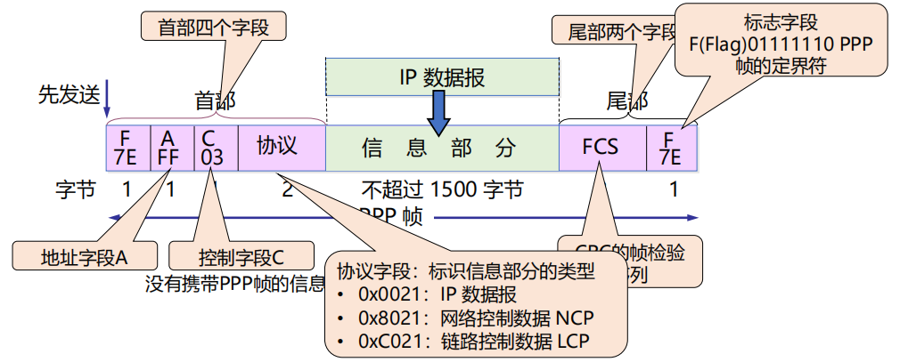
其中FCS为CRC校验和部分
字节填充：标志字段(0x7E)，转义字符(0x7D)
PPP协议的工作状态及转换
- 在点对点链路上建立通信，通信双方通过LCP报文进行配置和测试链路
- 对等实体进行身份认证（可选）
- PPP协议必须发送NCP报文来选择和配置一个或多个网络层协议
- 双方网络层协议可以通过PPP链路发送数据报，并持续通信
- LCP或NCP数据报显式关闭链路，或者异常事件导致关闭链路
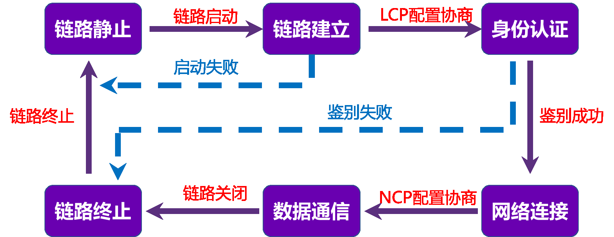
PPPoE概述
Ethernet缺点：安全性较低、不宜管理；使用广播信道，造成了安全性较低，无认证功能
PPP优点：安全性高(点对点信道，提供认证机制)，提供良好的访问控制和计费功能
PPPoE提供在以太网链路上的PPP连接，使用Client/Server模型，服务器通常是接入服务器
PPPoE组网方式
- (方式1)设备之间建立 PPP 会话，所有主机通过同一个 PPP 会话传送数据，主机上不用安装 PPPoE 客户端拨号软件，一般是一个机构共用一个账号
- (方式2)PPP 会话建立在 主机和运营商的路由器之间，为每一个主机建立一个 PPP 会话，每个主机都是PPPoE Client，每个主机有一个帐号，方便运营商对用户进行计费和控制。主机上需要安装PPPoE客户端软件。
PPPoE报文格式及Ethernet帧封装

PPPoE工作过程
- Discovery阶段：获取对方以太网地址，确定PPPoE会话ID
- Session阶段：PPP协商阶段、PPP报数据传输
- Terminate阶段：会话建立以后的任意时刻，发送报文结束
MAC
多点访问信道
多点访问信道：多用户共享一根信道
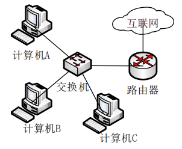
如图是以太网的典型拓扑，早期星型拓扑是集线器，现在几乎都是交换机，当使用集线器或交换机工作在半双工模式的时候，它的逻辑拓扑是总线式的，信道是共享的
常见的局域网拓扑
总线拓扑(Bus Topology)、星型拓扑(Star Topology)、环形拓扑(Ring Topology)
共同点：共享一根信道
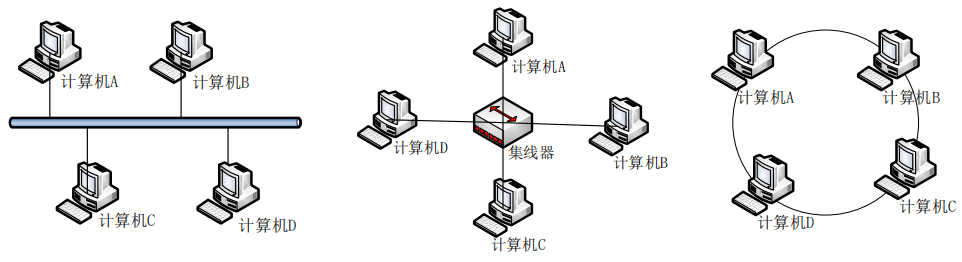
介质访问控制
介质访问控制(分配信道)：在多路访问信道上确定下一个使用者
静态分配方法：TDM(Time Division Multiplexing)、FDM(Frequency Division Multiplexing)
静态分配的排队论分析
M/M/1排队系统模型
第一个M(顾客到达时间间隔分布)：帧到达时间间隔服从指数分布，平均到达率(输入率)为 \(\lambda\) 帧/秒
第二个M(服务时间分布)：帧长度服从指数分布，平均长度 \(1/\mu\) 位/帧。信道容量位C位/秒，则信道服务率为 \(\mu C\) 帧/秒
1(并列服务台个数)
单信道平均延迟时间T(顾客在服务系统中的逗留时间)为：\(T=\frac{1}{\mu C-\lambda}\)
信道N等分后每个子信道的平均延迟时间：\(T_{FDM}=NT\)
多路访问协议
- 随机访问协议：冲突不可避免
- ALOHA
- 纯ALOHA
- 分隙ALOHA
- CSMA
- p-持续CSMA
- 1-持续CSMA/CD
- 非持续
- ALOHA
- 受控访问协议：克服了冲突
- 位图协议
- 二进制倒计数
- 令牌
- 有限竞争协议：上述二者结合
- 自适应树
纯ALOHA协议
想发就发，随时可能冲突，冲突的帧被完全破坏，破坏了的帧要重传。
-
概率：
(1) 一个帧时内信道中产生k个帧，服从泊松分布：\(Pr[k]=G^ke^{-G}/k!\)
(2) 一个帧时内信道中产生0个帧：\(Pr[k=0]=e^{-G}\) -
性能分析：
(1) 吞吐量(Throughout) S 表示在发送时间T内成功发送的平均帧数，显然满足 0<S<1
(2) 运载负载(Carried load) G 又称网络负载，表示时间T内所有通信站总共发送的帧平均值(包括原发和重发的分组)，显然满足 G≥S
(3) \(P_0\)：\(P_0\)是一帧发送成功的概率，就是发送成功的分组在已发送分组的总数中所占的比例，因而满足 \(S=G\times P_0\)
纯ALOHA协议的冲突危险期为2D，因而生成帧均值为2G，不遭受冲突的概率为 \(P_0=e^{-2G}\)
纯ALOHA信道的利用率最高为18.4%
分隙ALOHA(Slotted ALOHA)
分隙ALOHA是把时间分成时隙，时隙的长度对应一帧的传输时间，帧的发送必须在时隙的起点，冲突也只发生在时隙的起点。因而分隙ALOHA的冲突危险期大小为D。
分隙ALOHA的最大吞吐率为0.368，是纯ALOHA的两倍。
载波侦听多路访问协议
CSMA：Carrier Sense Mulyiple Access。特点是先听后发。
非持续式CSMA
特点：(1)经侦听，如果介质空闲，就开始发送 (2)如果介质忙，则等待一个随机分布的时间，然后重复上一个步骤
好处：等待一个随机时间可以减少再次碰撞冲突的可能性
缺点：等待时间内介质上如果没有数据传送，这段时间是浪费的
1-持续式CSMA
特点：(1)经侦听，如介质空闲，则发送 (2)如介质忙，持续侦听，一旦空闲立即发送 (3)如果发生冲突，等待一个随机分布的时间再重复步骤(1)
好处：持续式的延迟时间要少于非持续式
主要问题：如果两个以上的站等待发送，一旦介质空闲就一定会发生冲突
p-持续式CSMA
特点：(1)经侦听，如介质空闲，那么以p的的概率发送，以(1-p)的概率延迟一个时间单元发送 (2)如介质忙，持续侦听，一旦空闲重复步骤(1) (3)如果已经发送，那么就推迟一个时间单元再重复步骤(1)
CSMA/CD (1-持续)
CSMA with Collision Detection
原理：先发后听，边发边听
过程：(1)经侦听，如介质空闲，则发送 (2)如介质忙，持续侦听，一旦空闲立即发送 (3)如果发生冲突，等待一个随机分布的时间再重复步骤(1)
一旦侦听到发送出去的信号产生了冲突，就发送Jam(强化)信号。通过比较发出的信号与收到的信号是否一致来进行冲突的侦听。
要求发送帧的时间不能太短，需要至少一个冲突窗口的时间，也就是2D
感觉这一块最重要的地方是发送帧的长度的考察，也就是给你一点条件，让你算发送帧的最短长度需要是多少才能够不发生冲突。
CSMA/CD概念模型
- 传输周期：一个站点使用信道，其他站点禁止使用信道
- 竞争周期：所有站点都有权尝试使用信道，争用时间槽
- 空闲周期：所有站点都不使用信道
位图协议(预留协议) Bitmap Protocol
- 竞争期：在自己的石槽内发送竞争比特(包括举手示意和资源预留)
- 传输期：按序发送(明确的使用权，避免了冲突)
信道利用率分析：假设有r个用户(r近似于一个发送周期内平均需要发送一帧的用户个数)，需要N个时隙，每帧d比特，那么信道的利用率为
- 在低负载的情况下，r=1，那么信道利用率为 \(d/(d+N)\)
- 在高负载的情况下，r=N，那么信道利用率为 \(d/(d+1)\)，接近100%
缺点：位图协议无法考虑优先级
令牌传递(Token Passing)
工作方式：发送工作站去抓取令牌，获得发送权
发送的帧需要目的站或发送站将其从共享信道上去除，防止无限循环
缺点：令牌的维护需要一定的代价
二进制倒计数协议 Binary Exponential Backoff Protocol
每一个站点都有一个序号，并且序号的长度相同。在竞争期的时候，需要发送数据的站点从高序号到低序号排队，高者得到发送权。
特点：高序号站点优先(可能会导致饥饿问题)
信道利用率：N个站的二进制编码所需位数是 \(log_2N\) 位，因而信道的利用率为 \(d/(d+log_2N)\)
如果每个帧的帧头为发送地址，即竞争的同时也在发送，则效率为100%
自适应树搜索协议(Adaptive Tree Walk Protocol)
在一次成功传输后的第一个竞争时隙，所有站点同时竞争。如果只有一个站点申请，则获得信道。否则在下一竞争时隙，有一半站点参与竞争(递归)，下一时隙由另一半站点参与竞争。(所有站点构成一棵完全二叉树)[具体的使用查看第四次作业的第三题]
以太网的一些东西
以太网名称对应
快速以太网 Fast Ethernet 指百兆以太网(100Mbps)
经典以太网物理层
最高速率10Mbps，使用曼彻斯特编码，使用同轴电缆和中继器连接。
任意两个收发器之间距离不得超过2.5km，且任意两个收发器之间经过的中继器不能超过4个以保证MAC协议正常工作。
经典以太网MAC子层
主机运行CSMA/CD协议
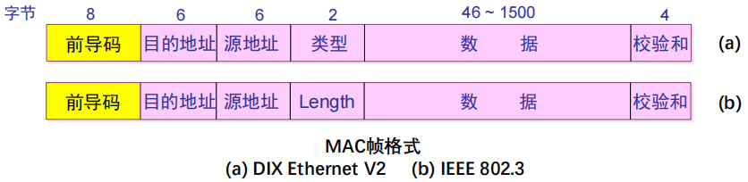
黄色部分为前导码，前7个字节为前同步码(Preamble)，最后一个字节是帧开始定界符(SFD)。只用来保证接收电路在帧的目的地址字段到达前保持正常的接收状态，这8个字节不需要保留，也不进入帧头长度。
粉色部分为以太网MAC帧内容，其中数据部分为IP数据报内容。
MAC地址举例
单播(unicast)：5C-26-0A-7E-4E-4C
广播(broadcast)：FF-FF-FF-FF-FF-FF
组播(multicast)：01-00-5E-00-00-00
前三个字节为OUI(Organizationally Unique Identifier)，是组织唯一标识符
后三个字节为NIC(Network Interface Controller) Specific，是网络接口控制器
源地址后面的两个字节，Ethernet V2将其视为上一层的协议类型(IPv4[0x0800]、ARP[0x0806]、PPPoE[0x8864])，IEEE802.3将其视为数据长度。(一般来说，网卡收到帧后，根据这个字段的大小来判断是Ethernet V2帧还是IEEE802.3帧，如果数字比较大就是Ethernet V2帧，反之就是IEEE802.3帧)
数据字段长度为46~1500字节，也就是说，最小帧长为46+18=64字节，最大帧长为1500+18=1518字节。如果数据字段不足46字节，需要填充整数字节(Padding)至46字节(全部填充0)，以保证以太网MACZ帧不小于64字节。(以太网中凡长度小于64字节的帧都是由于冲突而异常中止的无效帧)
校验和(FCS Frame Check Sequence)使用CRC32计算除了校验和以外的其他字段(从目的地址开始)。对于检查出的无效MAC帧就简单地丢弃，以太网不负责重传丢弃地帧。
二进制指数后退(Binary exponential backoff)的CSMA/CD
确定基本退避时间槽，其长度为以太介质上往返传播时间(\(2\tau\))，以太网中设为512比特时间。
定义重传次数k，k≤10，即 k=min[重传次数, 10]。
从整数集合[0, 1, ..., (\(2^k\)-1)]中随机取出一个数，记为r。重传所需的时延就是r倍的时间槽 \(2\tau\)。当重传达16次仍不能成功时即丢弃该帧，并向高层报告。
性能分析：在给定帧长的情况下，增加带宽或距离会降低网络效率。同时电缆的长度越长，信道的效率也会越低。
交换式以太网 Switched Ethernet
使用集线器(Hub)组建以太网。Hub所有端口内部都是连通的，使用同一根总线。集线器是物理层设备。
使用Hub拓展以太网并不能够增加容量，并且使用集线器组成更大的局域网都在一个冲突域中。
同一个冲突域中的数据不能够同时发送
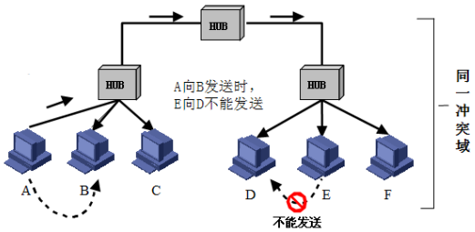
交换式以太网的核心是交换机(Switch)，工作在数据链路层，检查MAC帧的目的地址对收到的帧进行转发。
Switch与Hub相比，内部通过告诉背板连接所有端口，并且每个端口都有独立的冲突域，在全双工模式下端口可以同时收发，不需要CSMA/CD，并且可以实现并行传输
快速以太网(fast ethernet)
带宽从10Mbps增加到100Mbps，比特时间从100ns降低到10ns，电缆的最大长度降低到十分之一。
千兆以太网 gigabit Ethernet
带宽增加到1000Mbps(1Gbps)，可以使用全双工(不需要使用CSMA/CD)和半双工(需要使用CSMA/CD，并且增加载波扩充和帧突发)两种方式工作
万兆以太网 10-Gigabit Ethernet
常记为10GE, 10GbE或10 GigE，带宽增加到10Gbps。只支持全双工模式，不再使用CSMA/CD。重点是超高速的物理层。
40G-100G以太网 40 Gigabit Ethernet and 100 Gigabit Ethernet
带宽增加到40Gbps和100Gbps，同样只支持全双工模式。联网设备可以通过可插拔模块支持不同的物理层类型。
物理层设备扩充网络
Hub集线器可以在一定程度上实现网络的扩充，但是集线器的使用会扩大冲突域，导致性能的降低并且具有安全隐患。
数据链路层设备扩充网络
可以使用网桥(Bridge)或者交换机(Switch)来实现，可以实现冲突域的分隔。通过网桥控制交换机上数据的传输：当交换机看到包的来源和目的接口不一致时会进行传输，否则会直接丢弃。
Hub连接的还是一个冲突域，但是Bridge连接的不是一个冲突域
MAC地址表的构建
- 逆向学习源地址(记录端口与MAC地址的对应信息，主机向外发送数据时，其MAC地址就会被学习)，并且记录帧到达的时间，设定老化时间(默认300s)，当老化时间到期时，该表项就会从地址表中清除。(如果发现MAC地址已经在地址表中，那么就更新该表项的帧到达时间并且重置老化时间)
数据链路层交换原理
- Forwarding 转发：当MAC地址表完善时，网桥就会找到MAC地址对应的端口并且将数据帧转发出去
- Filtering 过滤：如果需要转发的端口等于数据帧到来的端口，那么就直接丢弃
- Flooding 泛洪：当MAC地址表不完善时，也就是此时找不到MAC地址的端口匹配项，那么就会从除了接收端口的所有端口发送出去，会浪费网络资源并且存在安全隐患(泛洪就相当于产生了一个巨大的冲突域)[除了在地址表中找不到匹配项的情况需要泛洪之外，另一种需要泛洪的情况是这个数据帧是广播帧，也就是目的地址为FF-FF-FF-FF-FF-FF]
链路层交换机
POE(Power Over Ethernet)交换机：无需电源(受电端)、无需专门布线
传统LAN分段中交换机端口通常和集线器连接，集线器再和主机连接，可以让冲突域更小。现代LAN分段中交换机直接和主机连接，创建无冲突域。
- 对称交换：出和入的带宽相同
- 非对称交换：出和入的带宽不同(交换机上不同端口的速率可能不同)
链路层交换机不同交换模式(从转发时机的角度)
- 存储转发模式(Store and Forward)：转发前必须接收整个帧、执行CRC校验，不转发出错帧并且支持非对称交换，但是延迟较大
- 直通模式(Cut-through)：一旦接受到帧的目的地址，就开始转发。延迟非常小，可以边入边出。但是可能转发错误帧，并且不支持非对称交换
- 无碎片模式(Fragment-free)：接受到帧的前64个字节就开始转发。这种方式过滤了冲突碎片，并且延迟和转发错帧介于存储转发和直通交换之间。但是仍可能转发错误帧，并且不支持非对称交换。
实际中使用最多的是无碎片交换
生成树协议STP(Spanning Tree Protocol)
- 物理环路引发的问题1 - 广播风暴(Broadcast Storm)：交换机或网桥在物理环路上无休止地泛洪广播流量，无限循环，迅速消耗网络资源
- 物理环路引发的问题2 - 重复帧：发送到环路中的单播帧可能导致目的设备收到重复的帧
- 物理环路引发的问题3 - MAC地址表不稳定：当一个帧的多个副本到达不同端口时，交换机会不断修改同一MAC地址对应的端口
如何得到一棵无环的生成树：(1)参与的交换机或网桥收发桥协议数据单元(BPDU)，选举产生根桥、根端口、指定端口，从而形成生成树
桥协议数据单元BPDY包含的信息：
(1) 根桥ID(Root ID)：桥ID共8字节，由2字节的优先级和6字节的MAC地址组成
(2) 根路径开销(Root Path Cost)：到根桥的最小路径开销
(3) 指定桥ID(Designated Bridge ID)：生成和转发BPDU的桥ID
(4) 指定端口ID(Designated Port ID)：发送BPDU的端口ID
生成树的选举过程1：选举根桥
同一广播域中的所有交换机均参与选举，桥ID最小的交换机或者网桥成为生成树的根。一个广播域内只能有一个根桥，并且根桥的多有端口都处在转发状态。
桥ID大小的比较
- 首先比较优先级，优先级数值最小的交换机胜出成为根桥
- 如果优先级数值相等，MAC地址最小的交换机成为根桥
生成树的选举过程2：为每个非根桥选出一个根端口
对于每个非根桥，通过比较其每个端口到根桥的根路径开销，选出根端口，如果多个端口的根路径开销相同，则端口ID最小的端口被选座根端口。
非根桥只能有一个根端口，根端口处于转发状态。
端口(链路)开销值由IEEE定义，也可以手动配置改变
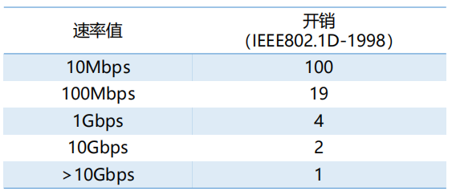
生成树的选举过程3：为每个网段确定一个指定端口
对于每一个网段，选择具有最小根路径开销的端口作为这个网段的指定端口(如果连接一个网段的端口的根路径开销相同，就选择桥ID较小的设备端口作为指定端口)。指定端口处于转发状态，负责该网段的数据转发。如果连接网段的既不是指定端口又不是根端口的端口，就会阻塞。
根桥的所有连接端口都是指定端口
802.1D标准给出的五种端口状态
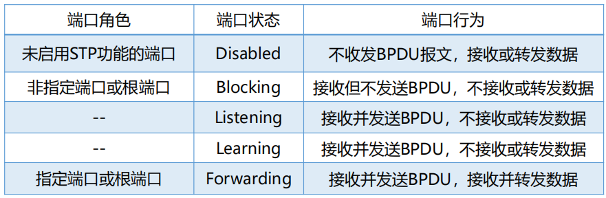
生成树协议端口状态的迁移
端口角色确定为指定端口或根端口后，从Blocking状态经Listening和Learning才能到Forwarding状态，中间需要两个Forwarding Delay时间。
默认的Forwarding Delay时间是15秒，能保证当网络的拓扑发生改变时，新的配置信息能够传遍整个网络，从而避免由于网络为收敛而造成临时环路。
当由交换机或者网桥或链路故障导致网络拓扑改变时，需要重新构成生成树。此时如果一个端口从Blocking状态变成Forwarding状态，至少需要30秒，也就是说，网络的联通性至少要30秒之后才能恢复。
快速生成树协议(RSTP, Rapid Spanning Tree Protocol)
RSPT是STP的优化版，具有更快的计算生成树的速度。
端口被选为根端口后，STP会有2倍的Forwarding Delay的时间延迟，但是RSTP在存在阻塞的备份根端口情况下，仅有数毫秒延迟。
端口被选为指定端口后，STP也会有2倍的Forwarding Delay的时间延迟。但是在RSTP中，如果指定端口是非边缘端口，延迟取决因素较多；如果指定端口是边缘端口，指定端口可以直接进入转发状态，没有延迟。
边缘端口是指哪些直接和终端设备相连，不再连接任何交换机的端口。不能被阻塞！
虚拟局域网(广播域)
广播域(Broadcasting Domain)是广播帧能够到达的范围。缺省情况下，交换机所有端口同属于一个广播域，无法隔离广播域。
当广播帧在广播域中传输，会占用资源，降低性能，并且存在安全隐患。
一般的交换机(不支持虚拟局域网)仅能够隔离冲突域，不能够隔离广播域。支持虚拟局域网的交换机可以通过划分VLAN来分隔广播域。每个VLAN都是一个独立的广播域。
通过路由器或三层交换机进行VLAN间路由，实现VLAN间通信。
不同VLAN的成员不能再数据链路层通信，但是可以在网络层通信。
VLAN类型
- 基于端口的VLAN(最常见)：通过交换机的端口来指定不同的VLAN
- 基于MAC地址的VLAN：通过不同的MAC地址来指定不同的VLAN
- 基于协议的VLAN：使用不同协议的通信处于不同的VLAN中
- 基于子网的VLAN：根据子网IP来区分不同的VLAN
不同VLAN的数据帧的区分
数据帧中携带VLAN标记，这个标记由交换机添加和删除，对于终端站点来说是透明的。
帧标记标准：IEEE802.1Q
- 带VLAN标记的帧称为标记帧(Tagged Frame)
- 不携带VLAN标记的普通以太网帧称为无标记帧(Untagged Frame)
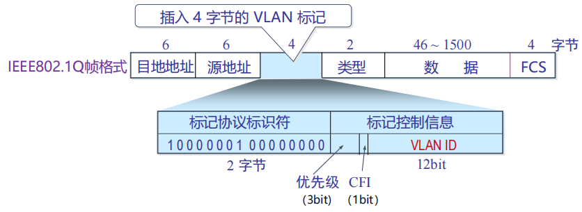
Access链路类型端口
一般用于连接用户设备，采用的是基于端口的VLAN划分，Access端口只能加入一个VLAN。一旦Access端口加入了特定的VLAN，连接在该端口的设备被视为属于该VLAN。
Trunk链路类型端口与Trunk链路
Trunk端口一般用于交换机之间连接，干道链路允许多个VLAN的流量通过。
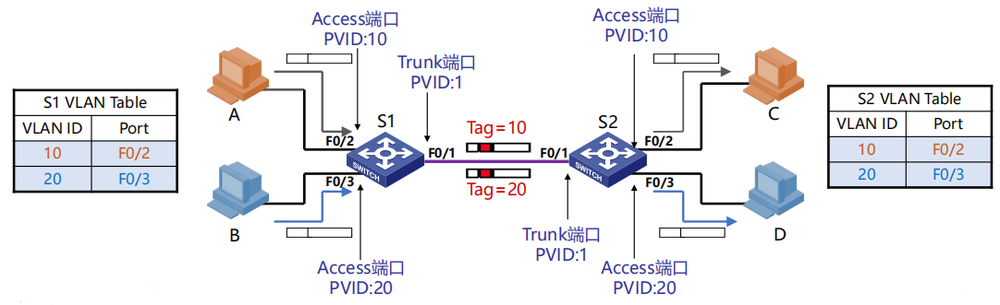
VLAN的优点
- 有效控制广播域范围：广播流量被限制在一个VLAN内
- 增强网络的安全性：VLAN间相互隔离，无法进行二层通信，不同VLAN间需要通多三层设备通信
- 灵活构建虚拟工作组：同一工作组的用户不必局限于同一物理范围
- 提高网络的可管理性：将不同的业务规划到不同的VLAN进行管理
无线局域网(WLAN, Wireless Local Area Network)组网模式
- 基础架构模式：包括分布式系统(DS)、访问点(AP)、站点(STA)、基本服务集(BSS)、拓展服务集(ESS)。站点之间的通信通过AP转发。
- 自组织模式(Ad hoc)：包括站点(STA)、独立基本服务集(IBSS)。站点之间直接通信，共享一条无线信道。
无线局域网体系结构
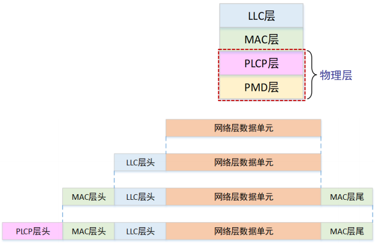
- 物理介质相关子层(PMD层)：调制解调、编码解码
- 物理层汇聚协议(PLCP层)：向上提供独立于传输技术的物理层访问点
- 介质访问控制层(MAC层)：可靠数据传输、介质访问控制、安全机制
无线局域网的介质访问控制方法为CSMA/CA
无线局域网可以近似认为是802.11
IEEE 802.11物理层
频段：2.4GHz、5GHz (工作在ISM频段，无需授权)
直接序列扩频(DSSS) -> 正交频分复用(OFDM) -> 正交频分多址(OFDMA)
支持多用户多入多出(MU-MIMO)
IEEE 802.11介质访问控制
不能将CSMA/CD直接运用于无线局域网，是因为在接收端，发射功率远大于接收功率，导致冲突检测困难。并且站点在发送时会关闭接收功能，无法在发送时同时检测冲突。
无线传输的范围：
(1) 传输范围(TX-Range)：成功接收帧的通信范围，由发送功率和无线电波传输特性决定
(2) 物理层侦听范围(PCS-Range)：检测到该传输的范围，取决于接收器的灵敏度和无线电波传输特性
(3) 干扰范围(IF-Range)：在干扰范围内发送不想关的帧，会干扰接收端的接收并导致丢帧
隐藏终端问题 Hidden Terminal Problem
由于距离太远(或障碍物)导致站点无法检测到竞争对手的存在，隐藏站点不能侦听到发送端单能干扰接收端。
例如：A正向B传输数据，C也向B传输数据，此时因为C的干扰，会导致B接收到的A的数据发生错误。
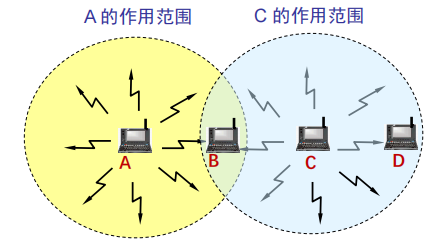
暴露终端问题 Exposed Termianl Problem
由于侦听到其他站点的发送而误以为信道忙导致不能发送，暴露站点能侦听到发送端但不会干扰接收端
例如：B正向A传输数据，C要向D发送数据，此时C能侦听到B正在发送消息，会误以为信道被占用而不向D发送数据
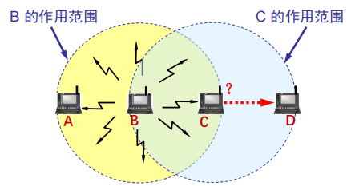
CSMA/CA(Carrier Sence Multiple Access with Collision Avoid)
当信道空闲时间大于帧间隙IFS时，立即传输。当信道忙时，延迟知道当前传输结束+IFS时间。
随机退后过程，从(0, CWindow)中选择一个随机数作为退后计时器(backoff counter)，通过侦听确定每个时间槽是否活动，如果没有活动，则减少退后时间。退后过程中如果信道忙，则挂起退后过程(可以解决站点之间的公平问题)。在当前帧传输结束后恢复退后过程。
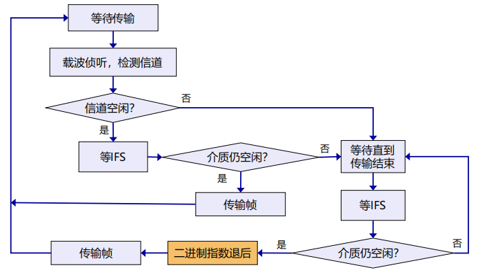
竞争窗口CWindow的选择
采用二进制指数退后算法
差错检测和确认重传
差错检测采用32位CRC校验
采用停等机制，并且如果达到最大重传机制，该帧被丢弃，并告知上层协议。
WIFI采用停等协议的原因时WIFI传播的范围非常短，因而停等协议对延迟的影响很小
不同帧间隙控制优先级
SIFS(Short IFS)：最高优先级，用于Ack，CTS，轮询响应等
PIFS(PCF IFS)：中等优先级(SIFS+1槽口时间)，轮询服务
DIFS(DCF IFS)：最低优先级(SIFS+2槽口时间)，异步数据服务
RTS-CTS机制
发送端发送RTS(request to send)，接收端回送CTS(clear to send)
RTS和CTS中的持续时间(Duration)中指明传输所需时间(数据+控制)
RTS和CTS帧很短，即使产生冲突，信道浪费较少
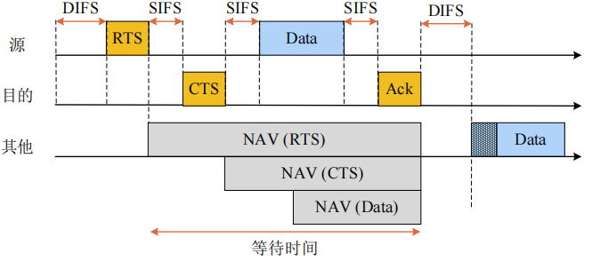
NAV(Network Allocation Vector)
如何应对无线链路较高的出错率？
- 采用较小的帧(将用户数据帧分段的机制对用户透明)
- \(F_i\)帧中携带\(F_{i+1}\)帧的传输时间
IEEE 802.11帧格式
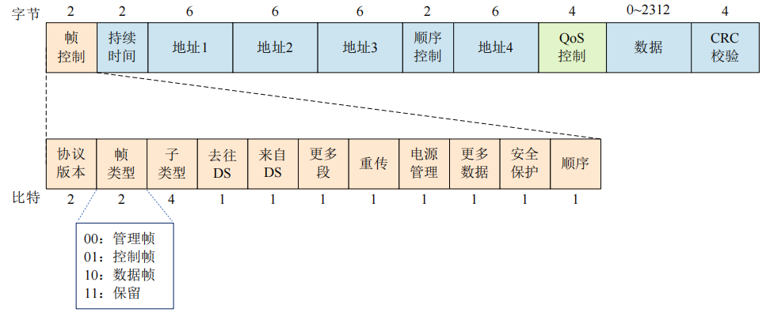
- 持续时间：下一个要发送帧可能持续的时间（NAV）或关联ID（AID）
无线局域网的构建与管理
基础架构模式
通过AP(BSSID[AP的MAC地址]，SSID[32字节网名，标识一个拓展服务集ESS，包含一个或多个基本服务集])接入有线网络
关联到AP的三个阶段：
- 扫描(Scan)
- 被动扫描：AP周期性发送Beacon帧，站点在每个可用的通道上扫描Beacon帧
- 主动扫描：站点依次在每个可用的通道上发出包含SSID的Probe Request 帧，具有被请求SSID的AP返回Probe Response帧
- 认证(Authentication)
- 选择信号最强的AP进行认证
- 关联(Association)
- 站点向 AP 发送关联请求，AP 向站点返回关联响应
- AP维护站点关联表，并记录站点的能力(如能够支持的速率等)
自组织模式(Ad hoc)
站点先寻找具有指定SSID的IBSS是否已存在。如果存在，则加入；若不存在，则自己创建一个IBSS，发出Beacon，等其他站来加入
- 站点漫游：当前的AP的通道质量下降时，站点漫游到不同的AP
- 站点睡眠管理：通过空闲时睡眠来延长电池的续航时间
Wi-Fi6
采用OFDMA频分复用技术，对单个时间片中频率的划分更加细致
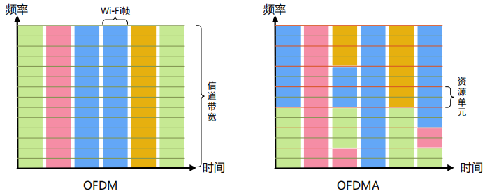
Network Layer
网络层传输的数据单位是数据报datagram
网络层关键功能是路由(控制面)和转发(数据面)
无连接服务的实现
网络层向上只提供简单灵活无连接的、尽最大努力交付的数据报服务。发送分组时不需要先建立连接，每个分组独立发送。并且数据报独立转发，相同源-目的数据报可能经过不同的路径。
可能会导致丢包、乱序、错误等问题。
优点：网络的造价大大降低，运行方式灵活，能够适应多种应用
数据报地转发就是无连接的方法。
一般来说，为了避免增加额外的开销进行数据排序，网络并不会随意地发送数据，在大多数情况下，仍然是会尽量沿着某一条路径发送
面向连接服务的实现
通信之间先建立逻辑连接(如有需要可以预留网络资源)，结合使用可靠传输的网络协议，保证所发送的分组无差错按序到达终点。
虚电路(viryual circuit)是逻辑连接，但是虚电路表示这只是一条逻辑上的连接，分组都沿着这条逻辑连接按照存储转发方式传送，而并不是真正建立了一条物理连接。但是电路交换的电话通信是先建立了一条真正的连接。
虚电路的转发策略：虚电路转发基于分组标签，也就是虚电路号(标签和端口之间有着对应关系，而且指定的标签输入会有对应的标签输出，。也就是说这要知道输入端口以及标签，就可以知道输出的端口以及输出时候的标签)
虚电路与数据报网络的比较
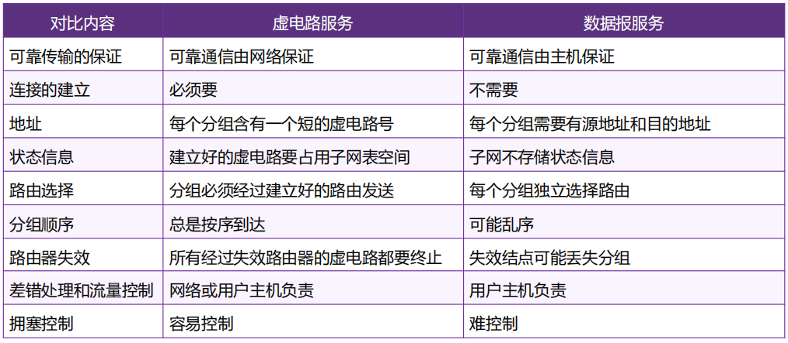
虚电路与数据报网络的性能比较
- 从性能的角度比较，当网络中存在突发的流量时，使用虚电路服务可能会丢掉一部分的数据，也有可能会造成一定的延迟(网络流量的过载)；但是使用数据报的话就完全不会影响网络的性能，也不会使得网路过载。
- 从效率角度比较，虚电路在数据传输时首先需要建立连接，会有一个时延，但是数据报网络就没有这个时延。
IPv4协议
internet协议执行两个基本功能：(1)寻址addressing (2)分片fragementation
IPv4数据报格式
IP数据报的前20字节需要记住(前5行)
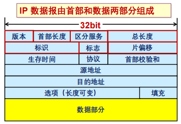
- 首部长度：表示整个IP数据报首部的长度
- 区分服务：该字段一般情况下不使用
- 总长度：表示整个IP报文的长度，能表示的最大字节为2^16-1=65535字节(因而也就限制了数据部分的最大长度)
- 标识(Identification)：IP软件通过计数器自动产生，没产生1个数据报计数器加1；在IP分片以后，用来标识同一分片
- 标志(Flags)：MF置1表示后面还有分片，置0表示这是最后一个；DF是不能分片标志，只有置0时才允许分片
- 片偏移(Fragement Offset)：表示IP分片后，相应的IP片在总的IP片的相对位置
- 首部校验和(Header checksum)：对数据报首部进行校验，不包括数据部分
需要记住
首部长度、总长度、片偏移的基本单位分别是4B、1B、8B
数据报分片
最大传输单元MTU(Maximum Transmission Uint)
分片策略包括：(1)允许途中分片，也就是根据下一跳链路的MTU实施分片 (2)不允许途中分片，发出的数据报长度小于路径MTU[一般来说不允许途中分片]
重组策略：一般选择目的端重组，但是也有途中重组(IPv4分片只在目的IP对应的目的端系统进行重组)
片偏移的基本单位是8字节
IP地址
IP地址的长度为32bit，地址高位为网络号(网络前缀)，低位为主机号
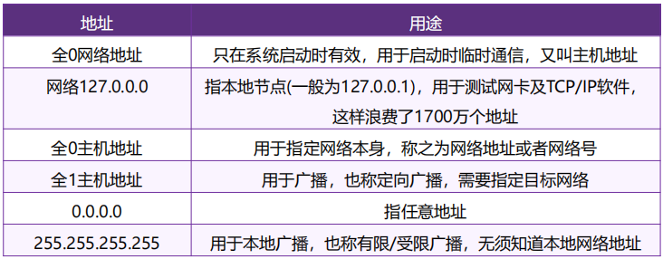
子网(subnet)
子网划分(subnetting)：在网络内部将一个网络块进行划分以供多个内部网络使用，对外仍然是一个网络
子网掩码(subnet mask)：与IP地址一一对应，是32bit的二进制数，置1表示网络位，置0表示主机位
注意：子网的主机数量需不需要减去2需要视题目二点情况决定
无类域间路由CIDR(Classless Inter-Domain Routing)
将32位的IP地址划分为前后两个部分，并采用斜线记法，即在IP地址后加上“/”，然后再写上网络前缀所占位数
一个 CIDR 地址块可以表示很多地址，这种地址的聚合常称为路由聚合(route aggregation)，也称为构成超网(supernet)
最长前缀匹配(Longest prefix match)
IP地址与IP前缀匹配时，总是选取子网掩码最长的匹配项，主要用于路由器转发表项的匹配
CIDR之前的分类的IP地址
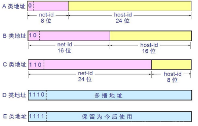
IPv4地址的获取
- 静态设定：申请固定的IP地址，手工设定，如路由器、服务器
- 动态获取：使用DHCP协议或其他动态配置协议，当主机加入IP网络，允许主机从DHCP服务器动态获取IP地址
DHCP
动态主机配置协议DHCP(Dynamic Host Configuration Protocol)
采用C/S工作模式，基于UDP工作，服务器运行在67号端口，客户端运行在68号端口
DHCP工作过程
- DHCP 客户从UDP端口68以广播形式向服务器发送发现报文（DHCPDISCOVER）
- DHCP 服务器单播发出提供报文（DHCPOFFER）
- DHCP 客户从多个DHCP服务器中选择一个，并向其以广播形式发送DHCP请求报文（DHCPREQUEST）
- 被选择的DHCP服务器单播发送确认报文（DHCPACK）
一般来说，DHCP的广播过程是广播 - 单播 - 广播 - 单播。但是如果客户机不支持单播，第二次的数据传输也会采用广播的方式。
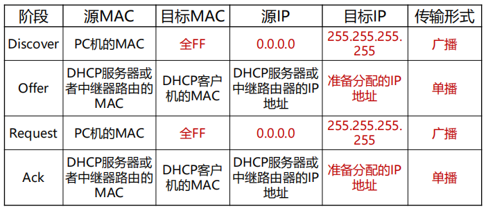
IP地址与MAC地址
IP数据报经过不同链路时，IP 数据报中封装的IP地址不发生改变，而Mac帧中的硬件地址是发生改变的。MAC的地址是指具体到这一跳的地址
ARP地址解析协议(Address Resolution Protocol)
ARP表：存储IP地址与MAC地址对应关系的表格
ARP协议工作过程(A想要获取B的MAC地址)：则A广播包含B的IP地址的ARP query分组，B接收到ARP query分组后，将自己的MAC地址发送给A(单播)，A在ARP表中缓存B的IP地址和MAC地址的映射关系，超时后就删除。
IP包转发
- 当与目的主机在同一个IP子网内时，直接交付
- 与目的主机不在同一个IP子网内时，通过路由发送到另一个局域网(先发送到路由器，由路由器发送到对应子网的路由器，再由对应路由器转发到对应的主机)
网络地址转换NAT(Network Address Translation)
NAT用于解决IPv4地址不足的问题，是一种将私有地址转化为公有IP地址的转换技术
私有IP地址
A类地址：10.0.0.0 - 10.255.255.255
B类地址：172.16.0.0 - 172.31.255.255
C类地址：192.168.0.0 - 192.168.255.255
NAT工作机制
所有的在本地网络中的主机发出的报文都是通过连接内网和外网的路由器发出到互联网中的，这些从这个NAT路由器中发出的报文具有相同的源IP地址。也就是说，内网中的所有数据首先发送到NAT路由器，然后再由路由器转发到外网中。当这些报文在内网中传输时，地址是各个主机在内网中的地址，但是当它们通过了NAT路由器后，会变成这个内网在整个互联网上唯一的IP地址。
使用路由器的端口号来区分到底是内网上的哪个主机的哪个端口
NAT转化表中存储内网源IP地址和端口与NAT IP地址和端口的对应关系。
NAT根据不同的IP上层协议进行NAT表项管理，传输层TCP/UDP拥有16bit端口号字段
NAT中的端口号是动态的，使用时会有动态的删减
NAT传输问题
一个处于外网中的主机想要连接到一个内网中的某个主机(10.0.0.1)，但是它只能获得整个子网的IP地址，无法连接到子网内部的哪一个具体的主机。
此时可以通过外网的一个中间路由器实现连接，需要让内网的主机主动去连接这个路由器，使得路由器保存这个内网中的主机的通信地址及端口，然后两者通过这一个路由器实现通信。
互联网控制报文协议ICMP(Internet Control Message Protocol)
ICMP允许主机或路由器报告差错情况和提供有关异常情况的报告。ICMP报文携带在IP数据报中：IP上层协议号为1。
ICMP报文类型：
(1)ICMP差错报告报文：终点不可达[不可达主机、不可达网络、无效端口、协议]
(2)ICMP询问报文：回答请求(ping使用)
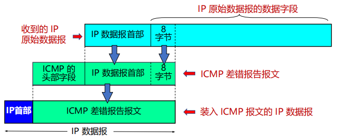
Traceroute和ICMP
使用TraceRT命令可以知道整个路径上路由器的地址
实现方式
通过设置不同TTL的值来控制数据包可以传输的距离(TTL=1, 2, 3, ...)
当第n个数据报到达第n和路由器：路由器丢弃数据报，并向源发送一个ICMP报文(类型 11, 编码0)，报文的源IP地址就是该路由器的IP地址
但是路径可能是不准确的，因为现在互联网上的数据包都是独立被路由的，它们走的可能是不同的路径
停止条件：
(1) UDP段最终到达目的地主机
(2) 目的地返回ICMP “端口不可达”分组(类型3, 编码3)
(3) 当源得到该ICMP，停止
路由算法优化原则 - 汇集树 Sink Tree
所有的源节点到一个指定目标节点的最优路径的集合构成一棵以目标节点为根的树
汇集树不是唯一的
最短路径算法
采用Dijkstra算法
距离向量路由DV(Distance Vector)
DV是将全局信息(自己到所有节点的距离)传递到局部
距离向量路由基本算法：每个节点周期性地向邻居发送它自己到某些节点地距离向量，当节点收到来自邻居地新DV估计，会更新自己地DV
一些注意点
DV的元素个数就是网络中节点的个数
一直都在动态更新，不一定是瞬时最优的
每个节点都会发送所有节点的路径长度，但是发送范围是小范围的
距离向量路由的特点：对好消息反应很快，但是对坏消息反应很慢(导致count-to-infinity)[count to infinity的解决采用毒性逆转(如果A是通过B到C的，那么A就告诉B自己到C的距离是无穷大)的方式，具体的内容查看第五章网络层中的内容]
链路状态路由(Link State)
LS是将局部信息(自己到相邻节点的距离)传递到全局
链路状态路由基本算法：
(1) 发现邻居并且了解他们的网络地址，然后设置到每个邻居的成本度量(常用度量为链路带宽的反比，也能给用延迟情况RTT)。
(2) 接着构造一个分组，分组中包含刚收到的所有信息(包括发送方标识、序列号、年龄以及邻居列表[邻居标识和到邻居的距离])。
(3) 最后将LS分组发送给其他的路由器(每个LS分组的序列号是递增的，路由器会记录收到的所有(源路由器、序列号)对，当一个新分组到达时，如果是重复分组就丢弃，如果是过时分组就拒绝，否则泛洪广播这个分组)。
(4) 最后使用Dijkstra算法计算到其他路由器的最短路径
层次路由
通过地址聚合(address aggregation)来缩减路由条目，从而减小路由表存储空间。
基本思路：互联网由大量不同的网络互联，每个管理机构控制的网络是自治的
自治系统(AS, Autonomous System)是一个管理机构控制之下的网络，一个AS内部通常使用相同的路由算法/路由协议。
自治系统内部使用内部网关路由协议(IGP, Interior Gateway Protocols)，自治系统之间使用外部网关路由协议(EGP, Exterior Gateway Protocols)[典型的EGP协议：BGP]
广播路由(Broadcasting)
方法1：给每个主机单独发送一个数据包(效率低、浪费带宽，并且服务器需要知道每个目的地址)
方法2：多目标路由(multi-destination routing)，在需要转发的路由器线路复制一次该数据报(网络利用率高，但是服务器依然需要知道所有目的地址)
方法3：泛洪(flooding)，将每个进入数据包发送到除了进入线路外的每条出去线路(此时环路可能导致广播风暴，并且路由器可能收到多个副本，此时节点需要跟踪泛洪的数据包来组织洪泛)
方法4：生成树(spanning tree)，源节点向所有属于该生成树的特定链路发送分组，此时没有环路并且使用最佳带宽，路由器只需要知道在一棵树中的邻居即可(但是需要维护比较多的树)
泛洪中的洪泛的解决方法：
(1) 序号控制泛洪(sequence-number-controlled flooding)：路由器会记录自己曾经收到的泛洪的数据包的序号以及来源，如果后续再次收到相同的数据包就会丢弃
(2) 逆向路径转发(reverse path forwarding, RPF)：路由器的路由表中记录到到达各网络的最优路径，当数据包到来时，判断是否是从最优路径来的，如果是就转发，否则就表示是重复包，直接丢弃(也就是说完全遵顼最优路径进行转发)
组播路由(Multicasting)
组播：源主机给网络中的小部分目标用户发送数据包
组播实现的步骤：
(1) 确定组成员：边缘路由器通过与主主机交互，了解到它的某个端口可以到达哪些组的成员 - 主机与路由器之间的组成员关系协议(IGMP Internet Group Management Protocol)
(2) 生成树(路由器和路由器之间的协议)：数据包沿生成树发送
常用组播地址段：224.0.0.0/24
224.0.0.1 LAN上所有设备
224.0.0.2 LAN上所有路由器
224.0.0.5 LAN上所有OSPF路由器
224.0.0.251 LAN上所有DNS服务器
组播地址都是D类地址 (1110 | 组播地址BIT位)
最佳生成树的使用取决于组的密度分布：
- 密集分布，基于源点树(source-based tree)
链路状态路由算法：每个路由器针对组内的每个发送者构造一棵独立树
距离向量路由算法：逆向路径转发，修剪没有组成员的路由器
存在的问题：大型网络中，组播源很多时，路由器需生成多棵树，工作量大。并且路由器需要大量空间来存储多棵树
- 稀疏分布，基于核心树(core-based tree)
多个组播源共享树，可以大大节省存储开销、消息发送和计算，并且每个路由器只需要保存一棵树
存在的问题：可能无法达到最优(如果只有一个发送者，将发送者作为核心是最优的)
选播路由(Anycast)
选播：将数据包传送给最近的一个组成员。在有多个服务器的情况下，用户希望快速获得正确信息，而不在乎从哪个服务器获得。
选播的典型应用：DNS
OPSF - 内部网关路由协议
开放最短路径优先协议OSPF(Open Shortest Path First)采用分布式的链路状态算法，只有当链路状态发生变化时路由器才会泛洪发送与本路由器相邻的所有路由器的链路状态的信息。
链路状态就是说明本路由器和哪些路由器相邻，以及该链路的度量(metric)，这个度量值一般包括费用、距离、时延、带宽等。
由于各路由器之间频繁地交换链路状态信息，因此所有的路由器最终都能建立一个链路状态数据库LSDB
OSPF的区域
OSPF支持将一组网段组合在一起，称为一个区域。详细的描述拓扑结构的链路状态信息仅在区域内传递，区域间传递的是抽象的路由信息。
使用层次结构的区域划分，上层的区域叫做主干区域(backbone area)，其他区域都必须与主干区域相连，称为非主干区域。非主干区域之间不允许直接发布区域间路由信息。
路由器角色：(1)内部路由器IR, Internal Router (2)区域边界路由器ABR, Area Bounder Router (3)自治系统边界路由器ASBR, AS Bounder Router
OSPF支持无类域间路由CIDR，使用IP组播收发协议数据，支持协议报文的认证
RIP - 内部网关路由协议
路由选择协议RIP(Routing Information Protocol)是基于距离矢量算法的协议，固定使用跳数衡量到达目的网络的距离
基本思想：仅和相邻路由器交换信息，交换的信息是路由器的路由表，每30s周期性更新一次
BGP - 外部网关路由协议
边界网关协议BGP(Border Gateway Protocol)是目前互联网中唯一实际运行的自治域间的路由协议
BGP功能：
(1) eBGP: 从相邻的AS获得网络可达信息
(2) iBGP: 将网络可达信息传播给AS内的路由器
(3) 基于网络可达信息和策略决定到其他网络的最优路由
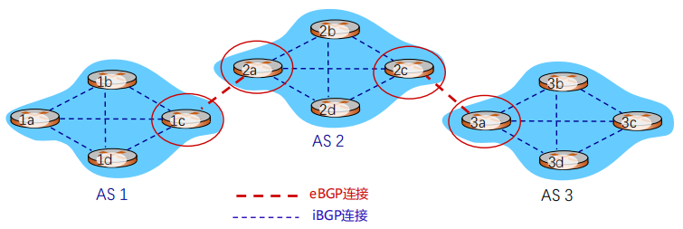
BGP基础
BGP会话：两个BGP路由器通过TCP连接交换BGP报文，通告到不同网络前缀的路径，即路径向量协议。
BGP路径通告：BGP路径通告的是完整的路径(比如AS2, AS3, X表示可以通过AS2和AS3将信息传输到主机X)
路由器可能学到多条到目的网络的路径，此时路由器会通过政治政策以及其他一系列的规则等进行取舍
BGP特点
BGP协议交换路由信息的结点数量级是自治系统数量级，每一个自治系统边界路由器的数目是很少的。
在BGP刚刚运行时，BGP的邻站是交换整个的BGP路由表，以后只需要在发生变化时更新有变化的部分。
BGP报文
BGP通过TCP的179端口交换报文
BGP路径属性
发布的前缀信息包括BGP属性(BGP attributes)[路由 route=prefix+attributes]
两个重要属性
(1) AS路径(AS-PATH)：IP前缀通过经过的所有AS号
(2) 下一跳(NEXT-HOP)：说明路由信息对应的下一跳IP地址
BGP路由选择
路由器可能从多个对等体收到针对同一目的IP的路由，此时需要选择一条最佳路由。
选择规则：
(1) 本地偏好值属性：政策决策
(2) 最短的AS-PATH
(3) 最近的NEXT-HOP路由器
(4) 附加标准...
(5) 最低路由器ID
BGP路由策略
路由器使用策略决定接受或者拒绝收到的路由通告，同时也会基于决策决定是否向其他相邻AS通告路径信息(通常是由政策决定的)
标签交换和MPLS
多协议标签交换MPLS(MultiProtocol Label Switching)，多协议表示在MPLS的上层可以采用多种协议(IP、IPv6、IPX)，标签是指每个分组被分配一个标签，路由器根据该标签对分组进行转发。交换是指标签的交换，MPLS报文交换和转发是基于标签的。
标签交换路由器LSR(Label Switching Router)是支持MPLS的路由器，具备标签交换和路由选择两种功能。
MPLS域指所有相邻的支持MPLS技术的路由器构成的区域。
标签分配协议LDP(Label Distributed Protocol)用来在LSR之前建立LDP会话并交换Label/FEC(Forwarding Equivalence Class 转发等价类)映射信息
标签交换和MPLS工作过程
- 加标签：在MPLS域的入口处，给每一个IP数据报加上标签，然后对加上标记的IP数据报用硬件进行转发
- 标签交换：采用硬件技术对加上标记的IP数据报进行转发称为标签交换
- 去标签：当分组离开MPLS域时，MPLS出口路由器把分组的标签去除。后续按照一般IP分组的转发方法进行转发。
路由器内部存在一张标签表，根据这张标签表实现标签的交换
路由器概述
路由器是互联网最主要的网络设备，包含2个核心功能
(1) 控制层：运行各种路由协议(BGP、OSPF、RIP)，学习去往不同目的的转发路径(路由表)[路由器可以同时运行多个路由协议，也可以不运行任何路由协议，只使用静态路由和直连路由。路由管理根据路由优先级，选择最佳路由，形成核心路由表，控制层将最佳路由表下发到数据层，形成转发表FIB(Forwarding Information Base)]
(2) 数据层：根据上述路由表，将收到的IP分组转发到正确的下一条链路
路由器优先级(数值越小，优先级越高)
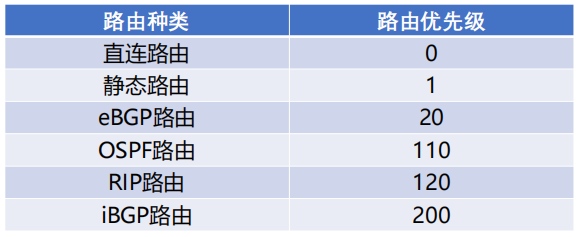
路由器数据层
路由器中IP报文转发核心功能：
链路层解封装，IP头部校验
获取报文目的IP地址
用目的IP地址，基于最长前缀匹配规则查询转发表
查询失败就丢弃报文，查询成功则获取转发出接口和下一跳IP地址，并加IP头部TTL字段值建议，重新计算校验和，最后进行链路层封装，发送报文
数据包在不同硬件单元的处理：(1)报文输入的接口卡(转发表的查询在这一步处理) (2)交换结构 (3)报文输出的接口卡
3种典型的交换结构
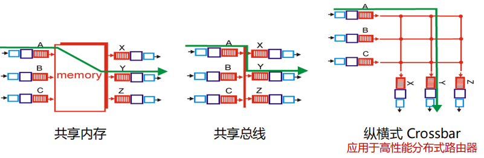
拥塞控制(congestion control) - 流量调节
- 抑制包(Choke Packets)：用于通知发送方减小发送量，路由器选择一个被拥塞的数据包，给该数据包的源主机返回一个抑制包，抑制包中的目的地址取自该拥塞数据包。源主机收到抑制包后，减少发向特定目的地址的流量
- 逐跳的抑制包(Hop-by-Hop Choke Packets)：在高速或长距离网络中，由于源主机响应太慢，抑制包算法对拥塞控制的效果并不好，可采用逐跳抑制方法；其核心思想是抑制包对它经过的每个路由器都起作用，能够迅速缓解发生拥塞处的拥塞，但要求上游路由器有更大的缓冲区
- 显式拥塞通告(ECN，Explicit Congestion Notification)，在IP包头中记录数据包是否经历了拥塞。在数据包转发过程中，路由器可以在包头中标记为经历拥塞，然后接收方在它的下一个应答数据包里回显该标记作为显式拥塞信号
服务质量
- 综合服务(IntServ：Integrated Services)
- 综合服务特点是：需要所有的路由器在控制路径上处理每个流的消息，维护每个流的路径状态和资源预留状态，在路径上执行基于流的分类、调度、管理
- 综合服务基于资源预留协议RSVP，逐节点建立或拆除流的状态和资源预留状态，根据流的状态进行QoS路由
- 综合服务的特征：资源预分配、全局流状态、传输控制
- 区分服务(DiffServ：Differentiated services)
- 区分服务(DiffServ)是一种计算机网络体系结构，它指定了一种简单且可扩展的机制，用于在IP网络上分类和管理网络流量并提供服务质量(QoS)
- DiffServ可用于向诸如语音或流媒体之类的关键网络流量提供低延迟服务，同时向诸如web流量或文件传输之类的非关键服务提供简单的尽力而为服务
- DiffServ在IP报头的8位区分服务字段(DS字段)中使用6位区分服务码点(DSCP)进行分组分类。换言之，DS字段替换过时的IPv4 TOS字段
虚拟专用网VPN(Virtual Private Network)
VPN通过隧道技术在公共网络上模拟出一条点到点的逻辑专线，从而达到安全数据传输的目的
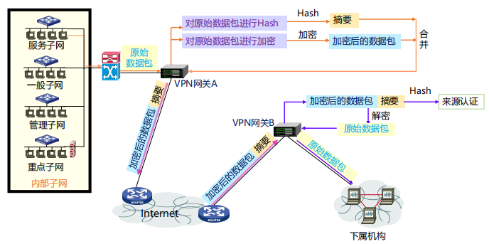
IPv6地址
IPv6地址长度为128bit，地址表示采用冒分十六进制(x:x:x:x:x:x:x:x)
简化方法：每个x前面的0可省略，可把连续的值为0的x表示为“::”, 且“::”只能出现1次
简化前地址，2001:0DA8:0000:0000:200C:0000:0000:00A5
简化后地址，2001:DA8:0000:0000:200C::A5
IPv6头部

- 版本：4bit，协议版本号，值为6
- 流量类型：8bit，区分数据包的服务类别或优先级
- 流标签：20bit，标识同一个数据流
- 有效载荷长度：16bit ，IPv6报头之后载荷的字节数(含扩展头)，最大值64K
- 下一个首部：8bit ，IPv6报头后的协议类型，可能是TCP/UDP/ICMP等，也可能是扩展头
- 跳数限制：8bit ，类似IPv4的TTL，每次转发跳数减1，值为0时包将会被丢弃
IPv6头部长度固定40字节，所有“选项”字段都在IPv6扩展头部分
IPv6不能在传输途中分片，只能在源端分片
IPv6首部格式的改变提升转发处理速度
IPv6拓展头
IPv6报文可承载多个扩展头，且每个扩展头都包含“下一个首部”字段(可能是下一个拓展头的类型，也可能是商城协议的类型)
IPv6地址
- 未指定地址（::/128），不能分配给任何节点
- 回环地址（::1/128），表示节点自己，不分配，类似IPv4中的127.0.0.1
- 组播地址（FF00::/8）
- 链路本地地址（FE80::/10），也称为Link-local地址，仅在本地链路上使用，网络设备根据接口MAC地址自动生成
- 全局单播地址，其它地址
IPv6地址配置方式：(1)手动配置 (2)DHCPv6(IPv6动态主机配置协议) (3)无状态地址自动配置，基于ND协议的RS报文的IPv6前缀信息，结合自己的链路层地址生成IPv6地址
IPv4和IPv6的过渡技术
- 双栈技术
- 隧道技术：部分使用IPv6通信，其余仍然使用IPv4通信
- 翻译技术：涉及IPv4报头和IPv6报头翻译及上层协议的翻译
Transport Layer
网络层传输数据的基本单位是数据段segment
因特网的网络层提供“尽力而为”的服务。最低限度的服务包括将终端-终端的数据交付拓展到进程-进程的数据交付以及报文检错。增强服务包括可靠数据传输、流量控制(Flow Control)以及拥塞控制(Congestion Control)
UDP协议仅提供最低限度的传输服务，而TCP提供基础服务和增强服务。
进程标识包括主机地址以及主机上与该进程关联的端口号
套接字编程
struct sockaddr {
u_char sa_len; // 地址长度
u_short sa_family; // 地址类型
char sa_data[14]; // 地址的具体值
};
struct in_addr {
in_addr_t s_addr; // IPv4地址
};
struct sockaddr_in {
sa_family_t sin_family; // IPv4总是AF_INET
in_port_t sin_port; // 使用端口
struct in_addr sin_addr; // IP地址
char sin_zero[8]; // 没有使用(全0)
};
#include <sys/socket.h>
// 如果创建成功，就返回套接字描述符，否则返回-1
int socket(
int domain, // 网络层地址类型 AF_INET指IPv4
int type, // 传输层协议 SOCK_STREAM指TCP字节流，SOCK_DGRAM指UDP数据报
int protocol // 总是0
);
#include <unistd.h>
int read(int fd, void *buf, size_t count);
int write(int fd, void *buf, size_t count);
// Linux系统中程序通过访问套接字描述符(在类型上和文件描述符完全兼容file description)来进行套接字通信
#include <sys/socket.h>
// 绑定成功就返回0，失败返回-1
int bind(
int sock_fd,
const struct sockaddr *sa,
socklen_t sa_len);
// 只有服务器需要调用bind()，客户程序的操作系统会自动分配一个1024~5000之间的端口号
#include <unistd.h>
// 关闭成功就返回0，失败就返回-1
int close(int fd);
// 客户端和服务端都需要调用close()函数来关闭一个套接字
// 当实参fd为TCP套接字描述符时，会引起本地进程向远程进程发送关闭连接的消息
// 当实参fd为UDP套接字描述符时，会引起为此描述符分配的资源被内核释放
UDP套接字不需要建立连接；而TCP套接字需要建立连接，服务器进程在监听套接字上等待用户的连接请求，收到客户的连接请求后，创建一个连接套接字与客户进程进行后续的实际通信。
#include <sys/socket.h>
// 监听成功返回0，失败返回-1
int listen(
int socket_fd,
int backlog // 剩余可连接个数
);
#include <sys/socket.h>
// 建立连接成功返回套接字描述符，失败返回-1
int accept(
int socket_fd,
struct sockaddre * cliaddr, // 客户端地址
socklen_t *addrlen // 地址结构长度
)
#include <sys/socket.h>
// 客户端调用connect()函数向服务器发起建立连接请求
// 成功返回0，失败返回-1
int connect(
int socket_fd,
const struct sockaddr *servaddr, // 服务器地址
socklen_t *addrlen
)
传输层复用(Multiplexing)和分用(Demultiplexing)
(发送端)复用：传输层从多个套接字收集数据，交给网络层发送
(接受端)分用：传输层将从网络层收到的数据，交给正确的套接字
套接字标识和端口号
每个套接字在本地关联一个端口号(0~1023为熟知端口，由公共域协议使用；1024~49151为注册端口，需要向IAN注册才能使用；49152~65535为动态或私有端口，一般程序使用)
每个TCP/UDP报文段中都有两个字段携带端口号，源端口号关联发送进程，目的端口号关联接收进程
套接字端口号的分配
客户端通常使用自动分配，也就是创建套接字时不指定端口号，由操作系统从49152~65535之间自动分配一个
服务器通常使用指定端口，也就是在创建套接字时指定端口号，其中实现公共域协议的服务器应分配众所周知的端口号(0~1023)
UDP服务使用的套接字
UDP套接字使用<IP地址，端口号>二元组进行标识，接收方传输层收到一个UDP报文段后，会检查报文段中的目的端口号，将UDP报文段交付到具有该端口号的套接字。
TCP服务器使用的套接字
一个TCP服务为了同时服务很多个客户，使用了两种套接字，包括监听套接字和连接套接字。连接套接字需要使用<源IP地址，目的IP地址，源端口号，目的端口号>四元组进行标识。
UDP提供的服务
网络层提供最大努力服务(best-effort service)，不保证投递的可靠性和顺序，也不保证带宽及延迟要求，提供报文检错功能，可以选择提供报文完整性检查功能
UDP报文段结构
源端口(16bit)+目的端口(16bit)+报文长度[以字节为单位](16bit)+校验和(16bit)+载荷
UDP校验和计算
UDP校验和的计算要包括伪头(Pseudo-Header)、USP头和数据三个部分。UDP校验和的使用是可选的，若不计算校验和，该字段填入0。
UDP伪头信息取自IP报头，包括源IP地址、目的IP地址、UDP协议号、UDP报文段总长度
UDP使用时不限制发送速率，也就是不进行拥塞控制和流量控制
TCP报文段结构

TCP报文段头部最短长度为20字节，TCP头长度以4字节为单位。
重要的TCP选项
- 最大段长度(MSS)：TCP段中可以携带的最大数据字节数。建立连接时，每个主机可声明自己能够接受的MSS，缺省为536字节。
- 窗口比例因子(window scale)：建立连接时，双方可以协商一个窗口比例因子。实际接收窗口大小 = window size * 2^window scale。
- 选择确认(SACK)：最初的TCP协议只使用累积确认。改进的TCP协议引入选择确认，允许接收端指出缺失的数据字节。
TCP可靠数据传输
TCP使用流水式发送以及累计确认的机制，可以避免重发某些丢失了ACK的报文段。同时TCP只使用一个重传定时器(对最早未确认的报文段使用)，避免了超时设置过小时重发大量报文段。
超时值的设置
平均RTT计算方法(指数加权移动平均)
EstimatedRTT = α*EstimatedRTT + (1-α)*SampleRTT ， 典型的 α=0.875
SampleRTT是从发出某个报文段到收到其确认报文段之间经过的时间
EstimatedRTT是SampleRTT的平均值
但是瞬时RTT和平均RTT有很大的偏差，所以需要在EstimatedRTT上加一个安全距离，作为超时值。
估算SampleRTT和EstimatedRTT的偏差称为DevRTT，DevRTT=(1-β)*DevRTT + β*|SampleRTT-EstimatedRTT|，典型的 β=0.25
设置重传定时器的超时值为TimeoutInterval = EstimatedRTT + 4*DevRTT
TCP确认的二义性
重传的TCP报文段使用与原报文段相同的序号，发送端收到确认后 ，无法得知是对哪个报文段进行的确认，导致SampleRTT的测量不准确。
可以通过值测量一次发送成功的报文测量SampleRTT，并且更新EstimatedRTT解决问题。
定时器补偿
简单忽略重传报文段会导致超时值设置过小的问题。
采用定时器补偿策略，发送方每重传一个报文段，就直接将超时值增加一倍，若连续发生超时时间，超时值呈指数增长。
Karn算法
Karn算法结合使用RTT估计值和定时器补偿策略确定超时值：使用EstimatedRTT估计初始的超时值，如果发生超时，每次重传时对定时器进行补偿，直到成功传输一个报文段。如果收到上层应用数据或某个报文段没有重传就被确认了，就用最近的EstimatedRTT估计超时值。
TCP接收端
允许推迟确认，并且规定推迟确认的时间最多为500ms，且接收方至少每隔一个报文段使用正常方式进行确认(估计RTT需要)

快速重传
TCP协议规定当发送方收到对同一序号的3次重复确认时，立即重发包含该序号的报文段。
Crash Recovery
当一个主机crash掉的时候，客户端可能有两种状态：
(1) S0 -> 没有数据段(ack)在传输中
(2) S1 -> 有数据段(ack)在传输中

能否通过总是重传以及使用序列号的方式来避免重复的情况？
取决于能不能向上层询问信息，如果能够向上层询问缓存信息，获得数据段传输的情况，就可以实现。仅仅通过自己本层的服务是无法实现的。
更加笼统的来说，想要从一个N层的crash恢复，一定需要N+1或者更高层的服务提供信息来进行状态保持
TCP流量控制
TCP接收端有一个接收缓存，存放收到的数据，然后会被应用进程后续取走。流量控制的目的就是通过调节发送方的发送速率，不让接收方的接收缓存溢出。
接收缓存中的可用空间称为接收窗口(RcvWindow)，接收方将RcvWindow放在报头中告知发送方接收缓存的可用空间。
TCP流量控制 - 非零窗口通告(None-Zero Window Advertisement)
TCP协议规定，发送方收到零窗口通告后，可以发送零窗口探测(Zero-Window Probe)报文段，从而接收方可以发送包含接收窗口大小的响应报文段。
糊涂窗口综合症
当发送方发送数据很快，但是消费速度很慢时，重复的零窗口探测会导致大量的带宽被浪费。
糊涂窗口综合症解决方案
- 接收方启发式策略：接收方在通告零窗口之后，仅当窗口大小显著增加(窗口大小达到缓存空间的一般或者一个MSS)后才发送更新的窗口通告。当窗口大小不满足条件时采用推迟确认的方式。
- 发送方启发式策略：发送方应积聚足够多的数据再发送，以防止发送太短的报文段。
发送方的Nagle算法
(1) 在新建连接上，当应用层数据到来时，组成一个TCP端发送(哪怕只有1个字节)
(2) 在收到确认之前，后续到来的数据放在发送缓存中
(3) 当数据量达到一个MSS或上一次传输的确认到来，用一个TCP段将缓存的字节全部发送
TCP连接 - 两次握手建立连接
存在问题：网路中不同包的到达顺序不是严格的，导致服务端接收包的顺序出错或者收到很久以前的包而出错
包序号问题
- 解决方式1：使用足够长的序号(比如32位的)
- 解决方式2：当收到重复的包序号时，判断和上一个序号的间隔，如果间隔的时间过短就丢弃，否则就接受
- 可以通过设置包的存活时间实现
- 使用基于时钟的序号选取方法(初始序号选取时钟的低位，可以尽可能避免新旧连接上的序号产生重叠)
- 每个主机都有一个时钟，这个时钟每隔一小段时间加1。
- 新建一个连接时，以本地计数器值的最低32位作为起始序号
- 这种情况下对发包的速度也有所限制，不能发包过快，导致包中序号的增长速度大于时钟的增长速度。同时也不能发包过慢，导致序号和下一个时钟周期的序号冲突(也可以规定单次连接的最长存活时间)。
TCP三次握手建立连接
- 客户端向服务器发送：SYNbit=1, Seq=x
- 服务器向客户端发送：SYNbit=1, Seq=y, ACKbit=1, ACKnum=x+1
- 客户端向服务器发送：ACKbit=1, ACKnum=y+1 (这一步中可以包含数据)
TCP连接释放
- 异步释放：当一方请求释放时就强制断开连接，可能会导致数据丢失问题
- 同步释放：采用四次挥手进行释放

客户/服务器经历的TCP状态序列

SYN泛洪攻击
攻击者采用伪造的源IP地址，向服务器发送大量的SYN段，却不发送ACK段。服务器为维护一个巨大的半连接表耗尽资源，导致无法处理正常客户的连接请求，表现为服务器停止服务
TCP端口扫描
扫描目标机器的不同端口，看目标机器会不会会ACK，如果回了(SYNACK说明目标端口上有服务在运行，RST说明目标端口上没有服务在运行，什么都没收到说明有防火墙)就说明目标机器的该端口提供服务，然后根据对方服务的端口来判断对方提供的服务类型
拥塞控制
丢包事件的两种情况：(1)重传定时器超时 (2)发送端收到3个重复的ACK
发送方使用拥塞窗口cwnd限制已发送未确认的数据量
拥塞窗口的调节策略：AIMD
- 乘性减(Multiplicative Decrease)：发送方检测到丢包后，将cwnd的大小减半(但不能小于一个MSS)
- 加性增(Additive Increase)：若无丢包，每经过一个RTT，将cwnd增大一个MSS，直到检测到丢包
TCP慢启动：在新建连接上指数增大cwnd，直至检测到丢包
慢启动的策略：每经过一个RTT，将cwnd加倍
慢启动的具体实施：每收到一个ACK段，cwnd增加一个MSS
区分不同的丢包事件
- 超时说明网络情况很差：设置门限=cwnd/2，cwnd=1MSS，使用慢启动增大cwnd至门限，使用AIMD调节cwnd
- 收到3个重复的ACK说明网络仍有一定交付能力：将cwnd降至一半，使用AIMD调节cwnd
TCP拥塞控制实现
发送方维护变量ssthresh，发生丢包时ssthresh=cwnd/2。
cwnd低于门限时使用慢启动，高于门限时使用AIMD。
AIMD阶段，每当收到ACK， cwnd=cwnd + MSS*(MSS/cwnd)
检测到3个重复的ACK后
- TCP Reno实现：cwnd= ssthresh+3，线性增长(加不加3却决于题目怎么说)
- TCP Tahoe实现：cwnd=1MSS，慢启动
TCP发送端的事件与动作

无线传输中的问题
无线传输中就算不拥塞也会有丢包问题的产生(因为传输错误而丢包)，此时的指示结果就不准确了，此时的错误判断会降低网络的利用率
解决方式：为了在无线网络中也能正常工作,拥塞控制算法观察到的丢包只能是那些因带宽不足造成的丢包,而不能把由于传输错误造成的丢包也算在内。这个问题的一种解决方案是通过使用无线链路上的重传机制把无线链路的丢包掩盖起来。例如,802.11使用停-等式协议来传递每个帧,在向上层报告丢包之前,如果需要会进行多次重传。在正常情况下,每个数据包的交付对高层是不可见的,尽管可能曾经发生过瞬间的传输错误。

图中显示了一条由有线和无线链路组成的路径,传输层采用了屏蔽策略。有两个方面需要注意。首先,发送端并不一定要知道该路径包括一条无线链路,因为它所能看到的只是与它连接的有线链路。Intemet上的路径是异构的,而且不存在一种通用的方法用来告知发送端路经由什么链路组成。这样的现状加深了拥塞控制问题的复杂性,因为没有简单的方法使得无线链路采用一个协议而有线链路采用另一个协议。
TCP性能分析
一个长期存活的TCP连接，平均吞吐量是多少？
- 忽略慢启动阶段（该阶段时间很短），只考虑拥塞避免阶段
- 令W=发生丢包时的拥塞窗口，此时有：throughput = W/RTT
- 发生丢包后调整 cwnd=W/2，此时有：throughput = W/2RTT
- 假设在TCP连接的生命期内，RTT和W几乎不变，有：Average throughout = 0.75 W/RTT
TCP的公平性
目标：如果K条TCP连接共享某条带宽为R的瓶颈链路，每条连接应具有平均速度R/K
- 考虑两条竞争的连接（各种参数相同）共享带宽为R的链路:
- 加性增：连接1和连接2按照相同的速率增大各自的拥塞窗口，得到斜率为1的直线
- 乘性减：连接1和连接2将各自的拥塞窗口减半

- 更复杂的情形
- 若相互竞争的TCP连接具有不同的参数（RTT、MSS等），不能保证公平性
- 若应用（如web）可以建立多条并行TCP连接，不能保证带宽在应用之间公平分配
TCP-BIC：Binary Increase Congestion
BIC算法对满载窗口进行二分查找：如发生丢包时窗口大小是W1，为保持满载而不丢包，满载窗口应小于W1；如检测到丢包并将窗口乘性减小为W2，则满载窗口应大于W2。
在ACK时钟的驱动下，将拥塞窗口置为(W1+W2)/2[作为新的W2的值]，从而不断逼近满载窗口
最大探查：如窗口再次达到W1而没有丢包，说明满载窗口大于W1 ，则以逼近W1的镜像过程增大拥塞窗口
当Wmax发生更新时以先慢后快的方式探测Wmax， 保证全过程拥塞窗口尽可能接近Wmax
BIC存在带宽不公平性问题
BIC以ACK时钟驱动拥塞窗口的更新，RTT较短的连接会更快到达满载窗口，占据更多的带宽，产生不公平性问题(RTT-fairness)
TCP CUBIC
CUBIC将BIC算法连续化，用三次函数拟合BIC算法曲线。拥塞窗口成为距上次丢包的时间t的函数，t取值位于两次丢包之间，不再根据RTT间隔来确定调整窗口的时机，避免了RTT不公平问题。
Google BBR
传输中的瓶颈链路带宽BtlBw(Bottleneck link Bandwidth)决定了端到端路径上的最大数据投递速率.拥塞窗口大于BtlBw时，瓶颈链路处会形成排队，导致RTT延长(直至超时)。

先前学的TCP Reno是从开始丢包的时候才开始处理的，相对开始处理时间较晚，实际上可以早一些开始处理。
瓶颈链路带宽BtlBw：不会引起路由器缓存排队的最大发送速率
RTprop：往返时间
BDP=BtlBw x RTprop
优化点的近似观测
用过去10秒内的最小RTT(min RTT)和最大投递率(max BW)，分别近似RTprop和BtlBw，并依据这两个值估算当前BDP
Max BW和min RTT不能同时被测得
要测量最大带宽，就要把瓶颈链路填满，此时buffer中存在排队分组，延迟较高
要测量最低延迟，就要保证链路队列为空，网络中分组越少越好，cwnd较小
BDP检测
- 启动阶段(START_UP)：当连接建立时，类似TCP的慢启动，指数增加发送速率，尽可能快地占满管道。若经过三次发现投递率不再增长，说明已达到BtlBw，瓶颈链路处分组已开始排队(事实上此时占的是三倍BDP)。
- 排空阶段(DRAIN)：指数降低发送速率（相当于是startup的逆过程），将多占的两倍buffer慢慢排空
- 瓶颈带宽探测(PROBE_BW)：进入稳定状态后, 先在一个RTT内增加发送速率，探测最大带宽。如果RTT没有变化，再减小发送速率，排空前一个RTT多发出来的包。后面6个周期使用更新后的估计带宽发送
- 时延探测(PROBE_RTT)：测得的RTprop作为基准，用以判断带宽检测阶段瓶颈链路中是否发生排队。每过10秒，如果估计的RTprop不变，就进入RTprop探测阶段，cwnd固定为4个包。
Data Center TCP
数据中心的通信模式为Partition/Aggregate：Aggregator将上层应用任务划分给下层的worker执行。
DCTCP核心思想：
(1) 根据网络拥塞程度精细地减小发送窗口：一旦发现拥塞，发送窗口减至原窗口的(1-α/2)， α反映了拥塞程度，而TCP中α总为1
(2) 根据交换机队列的瞬时长度标记ECN(explicit congestion notification)，使用显式的拥塞反馈能够更好地控制突发流量
相较于TCP，DCTCP能够将队列长度稳定地维持在一个很低的水平，并且波动远小于TCP
MPTCP
多路径TCP协议MPTCP(Multi-Path TCP)可将单一数据流切分为若干子流，同时利用多条路径进行传输。实现多径带宽聚合，提升传输的可靠性并且支持链路的平滑切换。
MPTCP位于套接字和TCP之间：应用程序通过套接字调用MPTCP，MPTCP向应用程序提供单条连接的抽象，因而对应用层透明。MPTCP连接是一个或多个子流的集合。
MPTCP连接建立：首先初始化一条MPTCP连接(与建立常规TCP连接的过程相似)，然后将MPTCP的其它子流附加到已经存在的MPTCP连接上。
MPTCP根据拥塞窗口大小及路径延迟，将数据按比例分配给各个子流，尽力保证数据包按序到达接收端，降低数据乱序到达对网络性能产生的不利影响
QUIC
QUIC实现在用户态中，底层基于UDP实现。QUIC与应用的联系更加紧密，可以频繁地更新。
QUIC包格式

QUIC底层使用UDP进行传输(QUIC包作为UDP地数据载荷)，IANA(互联网数字分配机构)建议QUIC使用UDP的443端口
QUIC连接建立时延优化

QUIC解决重传歧义的方法
- QUIC的packet number单调递增，对于重传包也会递增packet number
- 每个packet number只会出现一次，ACK没有歧义！
- QUIC接收端记录收到包与发出ACK之间的时延，并发馈给发送端，方便发送端更准确地测量RTT
QUIC优势
- 明确的包序号和更精确的RTT(后者是由前者决定的)
- IP地址/端口切换无需重新建立连接(QUIC使用Connection ID来表示每个连接，IP地址或端口的变化不影响对原有连接的识别)
- 由传输层对连接的切换进行管理
- 无队头阻塞的多流复用(在单个连接中，建立相互独立的多个QUIC流，某个流的数据包丢失不影响其它流的数据交付，可以减少不必要的等待)
- QUIC易于部署和更新(整个QUIC包被加密传输，QUIC在用户态实现)